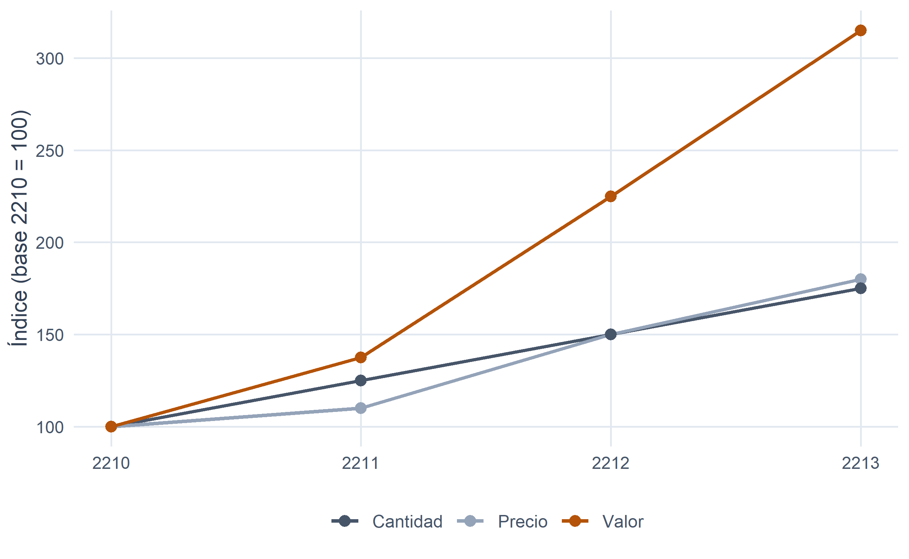
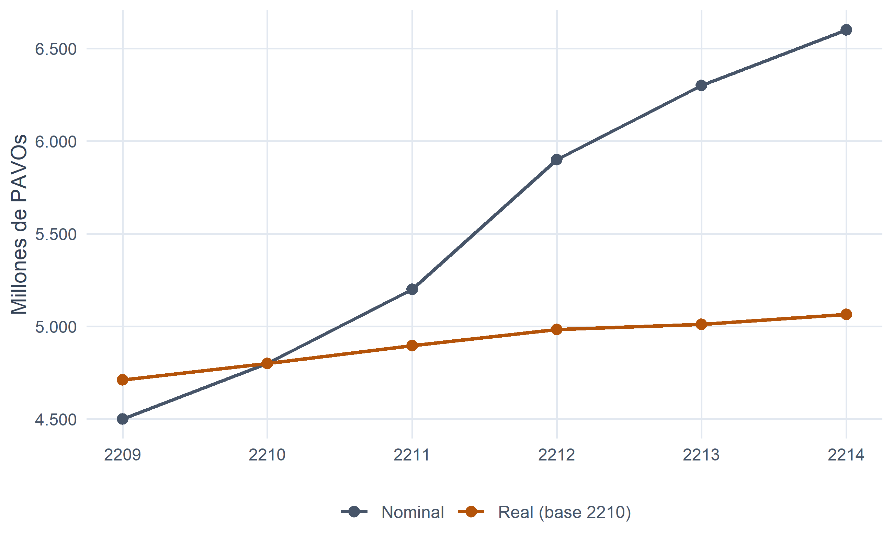

6 Números índice.
Figura 6.1
Cuando las magnitudes cambian con el tiempo (y con la sospecha).
Un aviso, para empezar, dirigido a quien haya llegado hasta aquí esperando series de datos, muestras y distribuciones de frecuencias como en los capítulos anteriores. Este es un capítulo raro: no hay muestras, ni histogramas, ni casi ecuaciones con letras griegas. Solo hay cocientes. Cocientes entre magnitudes económicas medidas en distintos momentos del tiempo, y una insistencia bastante persistente en que esos cocientes se interpreten con cabeza.
La razón de dedicarles todo un tema es sencilla, y muy anterior a la existencia de los cargueros interestelares: cualquier magnitud económica que se mida a lo largo del tiempo —un precio, una cantidad producida, un valor de ventas, un PIB— cambia, y para hablar con propiedad de esos cambios no basta con decir “ha subido” o “ha bajado”. Hace falta un número que sintetice cuánto ha subido o bajado con respecto a una referencia clara. Ese número, en su versión más humilde, es un número índice.
Y no es un tema periférico. Prácticamente cualquier debate económico serio —si la inflación se está moderando, si los salarios ganan o pierden poder adquisitivo, si un contrato de alquiler debe actualizarse, si la economía crece “de verdad” o solo lo hace la factura— descansa, al final, sobre uno o varios números índice. Antes o después, cualquier estudiante de este Grado tendrá que leer una noticia que dice “el IPC ha subido un \(2{,}3\,\%\)” o “el PIB creció un \(1{,}8\,\%\) en términos reales”, y saber qué hay exactamente detrás de esas frases distingue a un economista de alguien que solo repite lo que ha oído.
6.1 Concepto de número índice.
Empecemos con un caso muy pequeño y muy familiar. La compañía Arrakis Freight, con sede en Arrakis y flota renovada, publica cada año en su memoria corporativa el precio unitario de su servicio de carga estándar en la ruta Arrakis–Coruscant (en PAVOs/tonelada), la cantidad transportada (en miles de toneladas) y el valor total facturado en esa ruta:
| Año | Precio (PAVOs/tonelada) | Cantidad (miles de toneladas) | Valor (miles de PAVOs) |
|---|---|---|---|
| 2210 | 30 | 1200 | 36.000 |
| 2211 | 33 | 1500 | 49.500 |
| 2212 | 45 | 1800 | 81.000 |
| 2213 | 54 | 2100 | 113.400 |
Tabla 6.1
Ante estos datos, las tres preguntas que un directivo de la compañía suele formularse son casi siempre las mismas:
- ¿Cuánto ha subido el precio entre dos años cualesquiera?
- ¿Cuánto ha crecido la cantidad transportada en ese mismo período?
- Y, sobre todo, dado que ambas cosas ocurren simultáneamente, ¿cuánto ha cambiado el valor total facturado, y en qué medida se debe al precio y en qué medida a la cantidad?
Podríamos limitarnos a mirar los números en bruto, pero comparar \(54\) PAVOs frente a \(30\) PAVOs, o \(2\,100\) frente a \(1\,200\) mil toneladas, no da una idea rápida y homogénea. Lo que sí la da es medir el precio (o la cantidad, o el valor) de \(2213\) como múltiplo del de \(2210\): \(54/30 = 1{,}80\). El precio ha pasado a valer \(1{,}80\) veces lo que valía en \(2210\); o, equivalentemente, ha subido un \(80\,\%\). Ese cociente, \(1{,}80\), es un número índice.
Un número índice es una medida estadística que resume, mediante un cociente, los cambios que experimenta una magnitud —simple o compleja— a lo largo del tiempo o a través del espacio.
Aunque en este capítulo hablaremos casi siempre de comparaciones temporales, la definición cubre también las comparaciones espaciales: un número índice puede comparar, por ejemplo, el precio del combustible interestelar en Mustafar con el precio en Miranda. Es la misma familia de indicadores a la que pertenecen las conocidas paridades de poder adquisitivo que el Consejo Estelar de Estadística Galáctica publica para comparar el coste de la vida entre sistemas planetarios.
Merece la pena ver, aunque sea por ahora entre paréntesis, cómo se traduce un dato del tipo “el IPC ha subido un \(2{,}3\,\%\)” al lenguaje de los números índice: significa que el índice complejo de precios ha pasado de un valor \(I_{0}\) a un valor \(I_{t} = 1{,}023\cdot I_{0}\); ni más ni menos. En cualquier caso, el número índice necesita dos referencias:
- el período base (o de referencia), el que se toma como patrón de comparación, y
- el período actual (o corriente), aquel cuya magnitud se compara con la del período base.
Y según se elija fijar el período base a lo largo del tiempo o irlo desplazando, los números índice pueden ser de base fija o encadenados. Vamos a construir ambos con los datos de Arrakis Freight.
6.2 Números índice simples.
Un número índice simple compara los valores de una única magnitud a lo largo del tiempo (o del espacio). Es la versión más elemental del concepto, y la que conviene entender bien antes de pasar a nada más complejo.
6.2.1 Base fija.
Cuando el período base es siempre el mismo, hablamos de números índice de base fija. Sobre nuestro ejemplo, tomando como base el año \(2210\):
\[ p_{0}^{t} \;=\; \frac{p_{t}}{p_{0}}, \qquad q_{0}^{t} \;=\; \frac{q_{t}}{q_{0}}, \qquad V_{0}^{t} \;=\; \frac{p_{t}\, q_{t}}{p_{0}\, q_{0}} \;=\; p_{0}^{t}\cdot q_{0}^{t}. \]
La notación \(p_{0}^{t}\) se lee como “índice de precios en el período \(t\) con base en el período \(0\)”; y análogamente para cantidad (\(q\)) y valor (\(V\)). La última igualdad es una relación deliciosamente sencilla y que conviene retener desde ya: el índice de valor es siempre el producto del índice de precios por el índice de cantidades. Traducido: la evolución de lo que ingresa una empresa por un producto se explica siempre por el efecto conjunto de lo que ha variado el precio unitario y de lo que ha variado la cantidad vendida.
Aplicándolo a Arrakis Freight:
| Año | Índice de precios (\(p_{0}^{t}\)) | Índice de cantidades (\(q_{0}^{t}\)) | Índice de valor (\(V_{0}^{t}\)) |
|---|---|---|---|
| 2210 | 1,0000 | 1,0000 | 1,0000 |
| 2211 | 1,1000 | 1,2500 | 1,3750 |
| 2212 | 1,5000 | 1,5000 | 2,2500 |
| 2213 | 1,8000 | 1,7500 | 3,1500 |
Tabla 6.2
La lectura es directa. Entre \(2210\) y \(2213\), el precio del servicio de carga en la ruta Arrakis–Coruscant se ha multiplicado por \(1{,}80\) (ha subido un \(80\,\%\)); la cantidad transportada, por \(1{,}75\) (ha subido un \(75\,\%\)); y el valor facturado, por \(3{,}15\) (ha subido un \(215\,\%\)). Y, como es fácil comprobar, \(1{,}80 \times 1{,}75 = 3{,}15\): el fuerte tirón de las ventas es fruto de que precio y cantidad han crecido a la vez.
6.2.2 Encadenados.
En los números índice encadenados el período base se desplaza junto con el período corriente: cada año se compara con el año inmediatamente anterior. Las fórmulas son las mismas, cambiando el subíndice del período base:
\[ p_{t-1}^{t} \;=\; \frac{p_{t}}{p_{t-1}}, \qquad q_{t-1}^{t} \;=\; \frac{q_{t}}{q_{t-1}}, \qquad V_{t-1}^{t} \;=\; p_{t-1}^{t}\cdot q_{t-1}^{t}. \]
| Año | Índice de precios (\(p_{t-1}^{t}\)) | Índice de cantidades (\(q_{t-1}^{t}\)) | Índice de valor (\(V_{t-1}^{t}\)) |
|---|---|---|---|
| 2210 | — | — | — |
| 2211 | 1,1000 | 1,2500 | 1,3750 |
| 2212 | 1,3636 | 1,2000 | 1,6364 |
| 2213 | 1,2000 | 1,1667 | 1,4000 |
Tabla 6.3
La lectura ahora es distinta y complementaria: cada valor mide la variación respecto al año inmediatamente anterior. Un dato de \(1{,}3636\) en el índice de precios de \(2212\) indica que en ese año el precio subió un \(36{,}36\,\%\) con respecto a \(2211\). Y el índice del año \(2210\) no puede calcularse: no existe \(2209\) en la serie, así que el denominador falla y se representa como un guion.
Cabe subrayar, ya desde aquí, un matiz importante que retomaremos con detalle más adelante en el capítulo. La palabra encadenado es engañosamente sencilla en este contexto elemental —donde solo tenemos una magnitud y un cociente— pero en el mundo real, cuando el índice resume una cesta de bienes, describe una estrategia metodológica mucho más profunda: la de actualizar tanto la muestra como las ponderaciones año a año e ir hilvanando los índices sucesivos. Es lo que hoy hacen prácticamente todos los grandes indicadores de precios del planeta (Terra) —el IPC del INE incluido, desde 2001— y le dedicaremos, más adelante, una sección propia.
6.2.3 Sobre la presentación de un número índice.
Institutos estadísticos, bancos centrales y prensa económica no suelen publicar los números índice tal cual los hemos calculado, sino multiplicados por \(100\). Un valor de \(1{,}80\) aparece como \(180{,}00\), un valor de \(0{,}90\) como \(90{,}00\), y un valor de \(1{,}00\) como \(100{,}00\).
Es simplemente una convención cosmética: no cambia nada de la matemática, y facilita algo la lectura. Bajo esta convención, en un índice de base fija, el valor \(100\) marca siempre el período base; en un índice encadenado, cualquier valor por encima de \(100\) indica crecimiento y cualquier valor por debajo indica descenso respecto al período anterior. Por conveniencia, en el resto del capítulo alternaremos la escala decimal (\(1{,}80\)) y la escala porcentual (\(180{,}00\)) según convenga: la que resulte más limpia para lo que se está haciendo en cada momento.

Figura 6.2. Índices simples de precios, cantidades y valor de la ruta Arrakis–Coruscant (base 2210 = 100).
Con la representación gráfica el patrón se ve de una sola ojeada: la evolución de los tres índices al alza, con la línea del valor abriéndose paso por encima de las otras dos como recordatorio de que precio y cantidad, cuando tiran en la misma dirección, se refuerzan mutuamente.
6.3 Propiedades de los números índice.
Todo número índice bien definido debería cumplir un puñado de propiedades naturales, esto es, propiedades que uno esperaría de cualquier cociente que pretenda medir cambios relativos. Las enunciamos para el caso del índice de precios; valen igual para los de cantidad y de valor.
Existencia. Todo número índice debe estar bien definido: el denominador nunca puede ser cero. Aunque parezca una obviedad, no es un caso hipotético: un producto que no se comercializara en el período base, o un componente que aún no existiera —piénsese en el precio del implante de retina holográfica en el año \(2050\), décadas antes de su invención— inutiliza cualquier intento de tomar ese período como base para ese componente. La cuestión de cómo introducir productos nuevos en un índice ya en marcha es, de hecho, uno de los grandes quebraderos de cabeza de las oficinas estadísticas contemporáneas, como veremos más adelante.
Identidad. Cuando el período actual coincide con el período base, el índice debe valer \(1\) (o \(100\), en escala porcentual):
\[ p_{t}^{t} \;=\; \frac{p_{t}}{p_{t}} \;=\; 1. \]
Inversión o reversión cronológica. Si se intercambian los papeles de período base y período actual, el número índice resultante debe ser el inverso del original:
\[ p_{b}^{a} \;=\; \frac{p_{a}}{p_{b}} \;=\; z \quad\Longrightarrow\quad p_{a}^{b} \;=\; \frac{p_{b}}{p_{a}} \;=\; \frac{1}{z}. \]
Si en la ruta Arrakis–Coruscant el precio de \(2213\) es \(1{,}80\) veces el de \(2210\), entonces, mirado en sentido inverso, el precio de \(2210\) es \(1/1{,}80 \approx 0{,}556\) veces el de \(2213\). Coherencia elemental que un índice serio jamás debería romper.
Proporcionalidad constante independiente de la base. Si dividimos dos números índice con la misma base y períodos actuales \(a\) y \(b\), respectivamente, el resultado debe ser el número índice de base \(b\) y período actual \(a\):
\[ \frac{p_{h}^{a}}{p_{h}^{b}} \;=\; \frac{p_{a}/p_{h}}{p_{b}/p_{h}} \;=\; \frac{p_{a}}{p_{b}} \;=\; p_{b}^{a}. \]
Esta propiedad es, técnicamente, la más práctica de las cuatro: es la que nos permitirá cambiar de base una serie de índices ya calculada sin tener que reconstruirla desde los datos originales, tarea a la que dedicaremos, más adelante, una sección propia.
Los índices simples de precios, cantidades y valor cumplen las cuatro propiedades sin esfuerzo. Los complejos, como veremos enseguida, no todos: algunos las cumplen y otros no, y ahí radicará buena parte del debate sobre cuál usar en cada situación.
6.4 Números índice complejos.
Hasta ahora hemos trabajado con un solo producto o servicio. En la práctica, sin embargo, casi nunca se estudia la evolución de un precio aislado: se estudia la evolución del conjunto de precios de una cesta de bienes y servicios (piense en el IPC, que resume la evolución de miles de precios en un único número), o el conjunto de cantidades producidas por una empresa multiproducto, o el valor global de las ventas de una compañía con varias líneas de negocio.
Cuando se pretende sintetizar la evolución de varias magnitudes en un único índice, hablamos de números índice complejos. La idea es intuitiva: un índice complejo es un promedio ponderado de los correspondientes índices simples, uno para cada uno de los \(N\) productos o servicios que forman parte del conjunto.
Para el caso de un índice de precios de \(N\) bienes:
\[ IC_{0}^{t} \;=\; \sum_{i=1}^{N} p_{i,0}^{t} \cdot \frac{w_{i}}{\sum_{j=1}^{N} w_{j}}. \]
Los pesos \(w_{i}/\sum w_{j}\) son las ponderaciones: números entre \(0\) y \(1\) que suman \(1\), y que indican la importancia relativa de cada bien dentro del conjunto. No tendría sentido, por ejemplo, dar el mismo peso al precio del pan que al precio de la vivienda al calcular el IPC: la vivienda pesa mucho más en el presupuesto medio de un hogar. La pregunta clave es, entonces, cómo se eligen esas ponderaciones, y de esa elección nacen los distintos tipos de índice complejo que la literatura ha ido consolidando.
6.4.1 Índices de precios: Laspeyres, Paasche y Fisher.
Los tres protagonistas del capítulo son los índices de Laspeyres (Étienne Laspeyres, 1871), Paasche (Hermann Paasche, 1874) y Fisher (Irving Fisher, 1922). Todos ellos son promedios ponderados de índices de precios simples; se diferencian solo en el momento del tiempo del que se toman los pesos.
Laspeyres utiliza como ponderación el valor de cada bien en el período base (\(p_{i,0}\cdot q_{i,0}\)). Sustituyendo en la expresión general y simplificando el índice simple \(p_{i,0}^{t} = p_{i,t}/p_{i,0}\):
\[ L_{p} \;=\; \sum_{i=1}^{N} \frac{p_{i,t}}{p_{i,0}} \cdot \frac{p_{i,0}\, q_{i,0}}{\sum_{j} p_{j,0}\, q_{j,0}} \;=\; \frac{\sum_{i} p_{i,t}\, q_{i,0}}{\sum_{i} p_{i,0}\, q_{i,0}}. \]
Léase la forma final con calma: en el numerador, las cantidades del año base se valoran a los precios del año actual; en el denominador, esas mismas cantidades del año base se valoran a los precios del año base. Laspeyres responde a la pregunta “¿cuánto costaría hoy la cesta que se consumía en el período base?”.
Paasche utiliza como ponderación el valor de cada bien en el período actual (\(p_{i,0}\cdot q_{i,t}\)):
\[ P_{p} \;=\; \sum_{i=1}^{N} \frac{p_{i,t}}{p_{i,0}} \cdot \frac{p_{i,0}\, q_{i,t}}{\sum_{j} p_{j,0}\, q_{j,t}} \;=\; \frac{\sum_{i} p_{i,t}\, q_{i,t}}{\sum_{i} p_{i,0}\, q_{i,t}}. \]
Responde a la pregunta simétrica: “¿cuánto costó lo que se consume hoy si lo valorásemos a los precios del período base?”, o dicho al revés, la cesta actual valorada a precios actuales dividida entre esa misma cesta actual valorada a precios base.
Fisher es la media geométrica de los dos anteriores:
\[ F_{p} \;=\; \sqrt{L_{p}\cdot P_{p}}. \]
La lógica de Fisher es una lógica de “compromiso equilibrado”: no privilegia ni la estructura de consumo del pasado ni la del presente, sino que las combina de forma simétrica.
6.4.2 Índices de cantidades.
Los tres esquemas se aplican también, con las mismas fórmulas pero con los papeles de \(p\) y \(q\) intercambiados, para construir índices de cantidades:
\[ L_{q} \;=\; \frac{\sum_{i} q_{i,t}\, p_{i,0}}{\sum_{i} q_{i,0}\, p_{i,0}}, \qquad P_{q} \;=\; \frac{\sum_{i} q_{i,t}\, p_{i,t}}{\sum_{i} q_{i,0}\, p_{i,t}}, \qquad F_{q} \;=\; \sqrt{L_{q}\cdot P_{q}}. \]
Laspeyres para cantidades usa como pesos los precios del período base; Paasche los del período actual; Fisher los combina. Y, cerrando el círculo, cuando se usan los índices de Fisher se cumple —solo en ese caso— la relación
\[ V_{0}^{t} \;=\; F_{p}\cdot F_{q}, \]
que es exactamente la misma que ya vimos en los índices simples: la evolución del valor total se descompone limpiamente en un efecto precio y un efecto cantidad. Con Laspeyres y Paasche esa descomposición no es exacta, sino cruzada: \(L_{p}\cdot P_{q} = V_{0}^{t}\) y también \(P_{p}\cdot L_{q} = V_{0}^{t}\). En cambio, ni \(L_{p}\cdot L_{q}\) ni \(P_{p}\cdot P_{q}\) coinciden con el valor.
6.4.3 Un ejemplo con dos servicios de Hyperdrive Express.
Volvemos a un actor conocido: la compañía Hyperdrive Express, con sede en Miranda. Como en los capítulos anteriores, sus balances (activo, ingresos, resultado…) están recogidos en la base R-Stars. Aquí, sin embargo, vamos a considerar dos de sus líneas de negocio con datos ad-hoc en dos ejercicios que no aparecen en el fichero: el servicio A, transporte de carga (medido en PAVOs por tonelada) y el servicio B, transporte de pasajeros de tercera clase (medido en PAVOs por pasajero). Los datos son los siguientes:
| Año | \(p_{A}\) (PAVOs/tonelada) | \(q_{A}\) (toneladas) | \(p_{B}\) (PAVOs/pasajero) | \(q_{B}\) (pasajeros) |
|---|---|---|---|---|
| 2210 | 5 | 6.000 | 12 | 2.000 |
| 2213 | 10 | 7.500 | 20 | 5.000 |
Tabla 6.4
Con estos datos, tomando \(2210\) como período base y \(2213\) como actual, los tres índices complejos de precios salen:
\[ L_{p} \;=\; \frac{10\cdot 6\,000 + 20\cdot 2\,000}{5\cdot 6\,000 + 12\cdot 2\,000} \;=\; 1{,}8519 \;\longrightarrow\; 185{,}19\ \text{si base}=100. \]
\[ P_{p} \;=\; \frac{10\cdot 7\,500 + 20\cdot 5\,000}{5\cdot 7\,500 + 12\cdot 5\,000} \;=\; 1{,}7949 \;\longrightarrow\; 179{,}49\ \text{si base}=100. \]
\[ F_{p} \;=\; \sqrt{L_{p}\cdot P_{p}} \;=\; \sqrt{1{,}8519 \cdot 1{,}7949} \;=\; 1{,}8231 \;\longrightarrow\; 182{,}31\ \text{si base}=100. \]
Y, replicando el ejercicio para las cantidades:
\[ L_{q} \;=\; \frac{7\,500\cdot 5 + 5\,000\cdot 12}{6\,000\cdot 5 + 2\,000\cdot 12} \;=\; 1{,}8056, \qquad P_{q} \;=\; \frac{7\,500\cdot 10 + 5\,000\cdot 20}{6\,000\cdot 10 + 2\,000\cdot 20} \;=\; 1{,}7500, \]
\[ F_{q} \;=\; \sqrt{L_{q}\cdot P_{q}} \;=\; 1{,}7776. \]
En resumen, y en tabla:
| Concepto | Precios (\(\times 100\)) | Cantidades (\(\times 100\)) |
|---|---|---|
| Laspeyres | 185,19 | 180,56 |
| Paasche | 179,49 | 175,00 |
| Fisher | 182,31 | 177,76 |
Tabla 6.5
Sea cual sea el índice que elija el analista, la lectura es unívoca: entre \(2210\) y \(2213\), el conjunto de precios de los dos servicios de Hyperdrive Express subió alrededor de un \(80\text{–}85\,\%\) y el conjunto de cantidades comercializadas alrededor de un \(75\text{–}80\,\%\). Es también interesante observar la relación valor = precio \(\times\) cantidad solo para los índices de Fisher:
\[ F_{p}\cdot F_{q} \;=\; 1{,}8231\cdot 1{,}7776 \;=\; 3{,}2407 \;=\; V_{0}^{t} \;=\; \frac{10\cdot 7\,500 + 20\cdot 5\,000}{5\cdot 6\,000 + 12\cdot 2\,000} \;=\; 3{,}2407. \]
El valor total facturado por los dos servicios se ha multiplicado por \(3{,}2407\) y esa cifra se descompone limpiamente como producto del efecto precio y el efecto cantidad. Con Laspeyres o Paasche esta descomposición no se cumpliría exactamente: es una elegancia adicional que solo Fisher se reserva para sí.
6.4.4 Laspeyres, Paasche o Fisher: la elección real que se hace en la práctica.
La comparación de los tres números que acabamos de calcular (\(L_{p} = 185{,}19\), \(P_{p} = 179{,}49\), \(F_{p} = 182{,}31\)) no es una casualidad: Laspeyres suele salir por encima de Paasche, sistemáticamente, cuando estamos midiendo precios de bienes en un mercado donde los consumidores reaccionan a los cambios de precios. Este hecho —conocido como sesgo de sustitución— tiene una explicación económica clara y merece la pena entenderla, porque es la clave de bóveda del debate entre las tres fórmulas.
Cuando un bien se encarece, los consumidores tienden a sustituirlo, al menos en parte, por otros más baratos. Los pasajeros de tercera clase del ejemplo anterior son un caso de manual al revés: en \(2213\), el servicio de carga se ha vuelto relativamente más barato en comparación con el servicio de pasajeros (ambos han doblado su precio en términos absolutos, pero la estructura ha cambiado), y las cantidades demandadas se han reorganizado en consecuencia. Fijémonos en las ponderaciones implícitas:
- En \(2210\), el servicio A pesaba el \(55{,}56\,\%\) del valor total facturado y el B, el \(44{,}44\,\%\).
- Si valoramos las cantidades del año actual a los precios del año base (que es el peso que usa Paasche, sin el efecto de la variación de precios), el peso del A cae al \(38{,}46\,\%\) y el de B sube al \(61{,}54\,\%\).
Ha habido, por tanto, un fuerte reequilibrio de la actividad hacia el servicio \(B\). En este caso, la reasignación no ha ocurrido porque \(B\) se abaratara (ha subido incluso más en porcentaje), sino porque otras fuerzas del negocio empujaron ahí; pero la mecánica formal es la misma que en un mercado de consumo estándar. Y ahora la clave:
- Laspeyres aplica los pesos del período base, cuando aún no había ocurrido esa reasignación. Como resultado, asigna un peso relativo mayor al servicio \(A\) (el que “pesaba mucho” al principio) y el índice global refleja con más intensidad la subida de precios de ese componente. Cuando esta lógica se aplica al IPC de un país entero, el fenómeno se traduce en que Laspeyres tiende a sobrestimar la inflación real percibida, porque supone implícitamente que los hogares siguen consumiendo lo mismo, incluso los bienes que se han encarecido.
- Paasche aplica los pesos del período actual, cuando la sustitución ya ha ocurrido. Da menos peso a los bienes que se han encarecido (precisamente porque los consumidores ya se han alejado de ellos), y por eso tiende a subestimarla.
- Fisher, como media geométrica, se sitúa en algún punto intermedio, y por eso muchos economistas —empezando por Irving Fisher, que le puso nombre— lo consideran el índice teóricamente “ideal”.
Si Fisher es teóricamente más satisfactorio, ¿por qué no se usa Fisher siempre? Aquí es donde entra la que quizá sea la lección más importante de todo el bloque de números índice complejos: la elección entre los tres es, en la vida real, una decisión de coste, no de teoría.
Fijémonos en la información que necesita cada uno para poder calcularse:
| Índice | Precios \(p_{0}\) (base) | Cantidades \(q_{0}\) (base) | Precios \(p_{t}\) (actual) | Cantidades \(q_{t}\) (actual) |
|---|---|---|---|---|
| Laspeyres | Sí | Sí | Sí | No |
| Paasche | Sí | No | Sí | Sí |
| Fisher | Sí | Sí | Sí | Sí |
Tabla 6.6
La diferencia práctica es enorme. Laspeyres solo necesita conocer las cantidades del período base, que se determinan una sola vez y no se vuelven a tocar durante toda la vida útil de la base. Los precios sí hay que recogerlos mes a mes —para eso están los agentes del INE que visitan comercios— pero las cantidades (o, más rigurosamente, la estructura de gasto que hace las veces de peso) son un dato fijo. En cambio, Paasche exige actualizar las cantidades cada año, lo cual, cuando el índice cubre cientos de rúbricas, miles de establecimientos y millones de precios, se convierte en un ejercicio informacional cuya coste solo unas pocas oficinas estadísticas del mundo pueden permitirse. Fisher necesita ambas cosas, y por tanto hereda el coste completo de Paasche.
Este trade-off entre coste informacional y fidelidad teórica al comportamiento real del consumidor es el nudo del asunto:
- Laspeyres es barato y sesgado hacia arriba.
- Paasche es caro y sesgado hacia abajo.
- Fisher es muy caro pero equilibrado.
Durante casi todo el siglo XX, la práctica internacional se decantó, sin apenas alternativa realista, por Laspeyres puro con cambios de base cada ocho o diez años. Como veremos en la sección siguiente, la disponibilidad creciente de datos (encuestas de presupuestos familiares anuales, scanner data de las grandes superficies, contabilidad nacional actualizada trimestralmente) ha hecho posible una solución mucho más elegante para escapar de este dilema, que es la que hoy dominan la mayoría de los índices oficiales: el Laspeyres encadenado, un compromiso entre ambos que renueva las ponderaciones cada año pero mantiene el bajo coste de la fórmula de Laspeyres dentro de cada período.
6.5 La cesta y las ponderaciones: cómo se construye de verdad un índice complejo.
Todo lo anterior tiene un aire deliberadamente académico: dos bienes, dos años, cuatro datos por año, y todo cabe en una hoja de cálculo. La realidad de un índice como el Índice de Precios de Consumo publicado por el Consejo Estelar de Estadística Galáctica (o su análogo terráqueo, el INE) es de otro orden de magnitud. Merece la pena ver, aunque sea de pasada, cómo se hace de verdad, porque cambia mucho la intuición sobre qué significa realmente un dato del tipo “el IPC ha subido un \(2{,}3\,\%\)”.
Un índice complejo real necesita tres cosas: una cesta de bienes representativos, una estructura de ponderaciones que refleje la importancia relativa de cada bien, y un mecanismo de recogida periódica de los precios que componen esa cesta. Vamos a mirar cada una.
La cesta de bienes. La cesta del IPC español base \(2025\) está compuesta por \(487\) artículos de recogida tradicional más \(263\) obtenidos por scanner data de supermercados. Cada artículo (por ejemplo, “\(1\) kg de tomate en rama” o “billete de metro con abono mensual”) es la representación concreta de una parcela de consumo, con su ficha técnica: unidad de medida, calidad, marca —siempre que la definición sea suficientemente precisa como para poder repetir la observación mes a mes en el mismo tipo de establecimiento—. La cesta no puede ser tampoco demasiado grande, porque cada artículo dispara los costes de recogida; pero sí lo bastante variada como para representar la mayor parte del gasto de los hogares. En la práctica se seleccionan las parcelas de gasto que superan un umbral mínimo, y dentro de cada una se eligen los artículos concretos más representativos.
Las ponderaciones. ¿De dónde salen los pesos \(w_{i}\) que cada bien tiene en el índice? La respuesta, en el IPC español, es doble. La fuente principal es la Contabilidad Nacional —en concreto, el gasto en consumo final monetario de los hogares—, complementada por una encuesta específica, la Encuesta de Presupuestos Familiares (EPF), que aporta el detalle a niveles funcionales y geográficos más finos. Cada dos o tres años, además, se cruza esa información con datos de la oferta procedentes de sectores concretos (compañías eléctricas, operadoras de telecomunicaciones, mutuas sanitarias), para afinar aún más. En el IPC de la base \(2025\), la ponderación del grupo Restaurantes y servicios de alojamiento subió al \(17{,}03\,\%\), la de Alimentos y bebidas no alcohólicas al \(17{,}41\,\%\), y la de Vivienda, agua, electricidad, gas y otros combustibles al \(12{,}26\,\%\): entre estos tres pesan casi la mitad del gasto de un hogar medio.
La clasificación. Los \(487\) artículos no viven en el aire: se agrupan en \(196\) subclases, que a su vez se agrupan en \(108\) clases, \(45\) subgrupos y finalmente \(13\) grupos, siguiendo la clasificación europea ECOICOP —siglas de European Classification of Individual Consumption by Purpose—, común a todos los IPC nacionales de la UE y a su análogo armonizado, el IPCA. Esta estructura jerárquica es la que permite publicar mensualmente no solo un “IPC general”, sino su desglose por grupo, subgrupo, comunidad autónoma, provincia, o grupos especiales como bienes industriales sin productos energéticos o carburantes y combustibles.
La recogida. Cada mes, alrededor de \(200\,000\) observaciones de precios se recogen manualmente en unos \(33\,000\) establecimientos repartidos por \(177\) municipios españoles. A eso se añaden los datos de scanner data proporcionados por cadenas de supermercados (todas las líneas de caja de sus tiendas), los datos obtenidos por web scraping automatizado de páginas de venta online (billetes de tren, alquiler de vehículos, apartamentos turísticos), y los registros administrativos de precios centralizados (tarifas eléctricas, medicamentos con precio autorizado, tabaco). Toda esa información se depura, se contrasta —cualquier variación superior al \(\pm 25\,\%\) en alimentación o al \(\pm 10\,\%\) en el resto se revisa manualmente— y se agrega en un único índice general que se publica antes del día \(15\) del mes siguiente. Nada trivial.
Un detalle que ilustra el nivel de sofisticación: cuando un artículo desaparece del mercado y hay que sustituirlo por otro (por ejemplo, un modelo concreto de smartphone que ya no se fabrica), no basta con comparar precios; hay que decidir qué parte de la diferencia entre el modelo viejo y el nuevo se debe a cambio de calidad y qué parte es variación pura de precio. Para eso existen los ajustes hedónicos, esencialmente modelos de regresión —como los que ya vimos en el capítulo anterior— que estiman cuánto vale, en el mercado, cada característica adicional (memoria RAM, cámara con más megapíxeles, autonomía de batería) y la descuentan del precio observado. Es una aplicación curiosa: la regresión estadística incrustada dentro del cálculo de un índice de precios.
Cuando en el telediario nos anuncian que “el IPC subió tres décimas en octubre” o que “la inflación se ha situado en el \(2{,}3\,\%\)”, detrás de esa cifra hay, literalmente, un ejército de agentes, un ecosistema informático y una construcción estadística muy elaborada. No es un dato inocente.
6.6 Números índice encadenados: la práctica moderna.
Ya hemos visto en la sección 6.2.2 la versión más elemental de un índice encadenado: el que compara cada período con el inmediatamente anterior. En el mundo de los índices simples esto era poco más que una comodidad de lectura. Pero en el mundo de los índices complejos —con cesta, ponderaciones y clasificación funcional— la idea del encadenamiento adquiere una dimensión completamente distinta: se convierte en una estrategia metodológica para escapar del dilema de Laspeyres. Vale la pena verlo con detalle, porque es lo que hacen hoy prácticamente todas las oficinas estadísticas del mundo.
6.6.1 Del Laspeyres de base fija al Laspeyres encadenado.
El problema del Laspeyres de base fija ya lo hemos anticipado: sus ponderaciones —la cesta— envejecen. En un año, dos o tres, la estructura del consumo apenas cambia. Pero en cinco, en diez años, cambia mucho: aparecen categorías enteras nuevas (los servicios de streaming holográfico, los suscripciones a sistemas de defensa antiasteroides doméstica), otras se contraen o desaparecen (los reproductores de datacristales, los seguros de meteoritos convencionales), y los pesos relativos se reordenan por completo. Un IPC calculado en el año \(2226\) usando la cesta y las ponderaciones del año \(2210\) estaría midiendo, esencialmente, la inflación de un modo de vida que ya no existe.
Hasta principios de este siglo, la solución era doble: revisar la base cada ocho o diez años (dando pie al “cambio de base” del IPC, que en Terra ha ocurrido en \(2001\), \(2006\), \(2011\), \(2016\), \(2021\) y \(2025\)), y enlazar la serie antigua con la nueva —técnica que veremos en la sección siguiente—. Pero incluso así, entre dos cambios de base, la cesta permanecía congelada.
A partir del sistema base \(2001\), el INE (y con él, la mayoría de institutos estadísticos avanzados) dio el paso al Laspeyres encadenado. La idea es sencilla y muy elegante: seguir usando la fórmula de Laspeyres —fácil de calcular, exigente solo con las cantidades del período base—, pero actualizar cada año tanto la muestra como las ponderaciones, y empalmar los índices sucesivos multiplicando el nuevo por el anterior. En términos estilizados:
\[ p^{t}_{0} \;=\; p^{1}_{0}\;\cdot\; p^{2}_{1}\;\cdot\; p^{3}_{2}\;\cdots\; p^{t}_{t-1}, \]
donde cada factor es un Laspeyres calculado con las ponderaciones actualizadas a diciembre del año inmediatamente anterior. El resultado es un índice con base fija (todos los datos se refieren a un mismo año base para su presentación), pero cuyo motor interno son un montón de pequeños Laspeyres anuales concatenados. Se combinan así lo mejor de dos mundos: la ligereza y el bajo coste de Laspeyres dentro de cada tramo anual, con la actualidad de las ponderaciones que en un Paasche exigiría reponderar en cada período de referencia.
Un pequeño ejemplo estilizado, con dos bienes y tres años:
| Año | \(p_{1}\) | \(q_{1}\) | \(p_{2}\) | \(q_{2}\) |
|---|---|---|---|---|
| 2210 | 10 | 100 | 20 | 50 |
| 2211 | 12 | 90 | 22 | 55 |
| 2212 | 15 | 80 | 24 | 60 |
Tabla 6.7
Si aplicáramos Laspeyres puro con base \(2210\), obtendríamos:
\[ L_{p, 2210 \to 2212} \;=\; \frac{15\cdot 100 + 24\cdot 50}{10\cdot 100 + 20\cdot 50} \;=\; \frac{2\,700}{2\,000} \;=\; 1{,}3500. \]
En cambio, con Laspeyres encadenado —calculando cada tramo con las ponderaciones del año inmediatamente anterior— tenemos:
\[ L_{p, 2210 \to 2211} \;=\; \frac{12\cdot 100 + 22\cdot 50}{10\cdot 100 + 20\cdot 50} \;=\; \frac{2\,300}{2\,000} \;=\; 1{,}1500, \]
\[ L_{p, 2211 \to 2212} \;=\; \frac{15\cdot 90 + 24\cdot 55}{12\cdot 90 + 22\cdot 55} \;=\; \frac{2\,670}{2\,290} \;=\; 1{,}1659, \]
\[ L_{p, 2210 \to 2212}^{\text{encadenado}} \;=\; 1{,}1500\cdot 1{,}1659 \;=\; 1{,}3408. \]
La diferencia entre \(1{,}3500\) y \(1{,}3408\) es pequeña (\(0{,}7\,\%\)), pero significativa: el índice encadenado ha “visto” que entre \(2210\) y \(2211\) los consumidores empezaron a reasignar sus cantidades, y ha incorporado esa información en el cálculo del segundo tramo, mientras que Laspeyres puro las ignora por completo. Cuanto más lejano sea el período base y mayor la reasignación de cantidades, mayor será la brecha entre ambos: en el largo plazo, un Laspeyres puro puede llegar a exagerar la inflación acumulada en varios puntos porcentuales enteros, un error inaceptable en un mundo en el que las pensiones, los alquileres o los salarios se revisan usando el IPC como referencia.
6.6.2 No aditividad y chain drift: los precios que hay que pagar.
El Laspeyres encadenado no es una solución gratuita: viene con dos peculiaridades metodológicas incómodas que conviene conocer.
La falta de aditividad. En un Laspeyres puro, el índice de un agregado (por ejemplo, el IPC general) puede obtenerse como una media ponderada de los índices de sus componentes (los \(13\) grupos ECOICOP, cada uno con su peso). Es una propiedad muy útil: da coherencia interna al indicador y permite calcular repercusiones de cada componente sobre el total con reglas de tres. En un índice encadenado, esta propiedad se pierde: no es posible reconstruir el índice general como media ponderada de los índices de los grupos. La misma metodología del INE lo dice, casi con resignación:
“El principal inconveniente de los índices encadenados es la falta de aditividad. Esto hace que no sea posible obtener el índice de cualquier agregado como media ponderada de los índices de los agregados que lo componen. Así, por ejemplo, el índice general no se puede calcular como media ponderada de los índices de los doce grupos.”
En la práctica esto exige mantener y publicar índices adicionales (los llamados índices “referidos a diciembre del año anterior”) que sí son aditivos, y que sirven de peldaño intermedio para todos los cálculos internos. Es una complicación operativa, pero manejable.
El chain drift. Es un problema más sutil y algo desconcertante: en algunos casos, si en un año \(t\) los precios vuelven exactamente a su nivel del año base y las cantidades no, el índice encadenado no vuelve a \(1\), sino que se queda con un pequeño residuo. Es como si el mero acto de haber pasado por unos precios intermedios distintos —aunque hayamos vuelto al punto de partida— dejara una huella permanente en el índice. Sobre nuestro ejemplito, si añadimos un año extra donde los precios de \(2210\) regresan pero las cantidades de \(2211\) persisten, el Laspeyres encadenado \(2210 \to 2211 \to \text{"vuelta"}\) arroja \(1{,}0044\) en lugar de un pulcro \(1{,}0000\): un error de \(44\) puntos básicos que no debería existir. En series muy volátiles o con alta frecuencia (semanal, diaria) el fenómeno puede acumularse y hacerse molesto, lo que ha dado pie a toda una línea de investigación en estadística oficial sobre fórmulas de encadenamiento alternativas (los índices de Törnqvist o de Fisher encadenado, con propiedades más robustas frente al drift, pero también más costosos).
Para el IPC mensual, donde las ponderaciones se actualizan solo una vez al año, el chain drift rara vez supone un problema práctico apreciable, y por eso el Laspeyres encadenado sigue siendo la fórmula estándar. Pero conviene saber que existe: si algún día se topa el lector con un debate técnico sobre por qué tal o cual índice se calcula con Fisher encadenado, será, con toda probabilidad, esta la razón.
6.6.3 Nota metodológica: el índice moderno es más que una fórmula.
Más allá del cambio de fórmula, la elaboración de un IPC actual incorpora todo un ecosistema de técnicas que hace unas pocas décadas no existían y que conviene, al menos, nombrar:
- Scanner data. Los datos de línea de caja de las grandes cadenas de supermercados aportan, para un puñado de categorías (alimentación envasada, droguería, cuidado personal), el universo completo de transacciones —no una muestra— con precio y cantidad para cada referencia comercial. Es una revolución respecto a la recogida tradicional a lápiz y libreta.
- Web scraping automatizado. Para bienes y servicios cuyos precios cambian a diario y se publican en internet (billetes de avión, apartamentos turísticos, alquiler de vehículos), la recogida se automatiza mediante software que consulta las páginas web con la frecuencia adecuada y extrae precios de forma masiva.
- Ajustes hedónicos por calidad. Como ya se ha mencionado, cuando un artículo desaparece del mercado, la parte del cambio de precio que se debe a mejora tecnológica se depura mediante regresión sobre las características del producto.
- Introducción y salida de productos. La cesta se revisa anualmente para incluir productos emergentes (los últimos años han incorporado, en el IPC terráqueo, los servicios de plataformas de streaming, los servicios de mensajería instantánea de pago o las suscripciones a gimnasios low cost) y dar de baja los que dejan de ser representativos.
El resultado es un indicador cuya construcción combina, sin remordimientos, estadística clásica con ingeniería de datos moderna. Es un buen ejemplo de disciplina que ha sabido reciclarse.
6.7 Enlace y cambios de base.
Aunque el encadenamiento anual descrito en la sección anterior amortigua enormemente el problema del envejecimiento de la cesta, cada varios años (cinco, en el caso del IPC español) las oficinas estadísticas hacen un cambio de base completo: rehacen toda la clasificación funcional, actualizan la muestra de artículos y establecimientos, y reexpresan el índice tomando un nuevo año como referencia (\(=100\)). El último cambio de base del IPC entró en vigor en enero de \(2026\), con base \(2025\).
En ese momento surge una cuestión práctica de primer orden: si un contrato de alquiler estipula “revisión anual según el IPC” y la serie histórica cambia de base, ¿cómo se conectan los datos antiguos con los nuevos? La respuesta técnica se llama enlace de series, y descansa directamente sobre la propiedad de proporcionalidad constante independiente de la base que enunciamos en la sección 6.3. Vamos a verla en acción con datos concretos.
Supongamos que disponemos de una serie de índice de precios de un conjunto de bienes de consumo galácticos con base en el año \(2208\), y que queremos reexpresarla con base en \(2212\). La expresión del enlace técnico es:
\[ p_{h}^{t} \;=\; \frac{p_{0}^{t}}{p_{0}^{h}}, \]
que sale directamente de aplicar la propiedad ya mencionada tomando como “base antigua” el período \(0\) (aquí, \(2208\)) y como “base nueva” el período \(h\) (aquí, \(2212\)). Ilustrémoslo:
| Año | Índice base 2208 | Índice base 2212 | Índice enlazado (base 2212) |
|---|---|---|---|
| 2208 | 100,00 | — | 45,4545 |
| 2209 | 130,00 | — | 59,0909 |
| 2210 | 160,00 | — | 72,7273 |
| 2211 | 190,00 | — | 86,3636 |
| 2212 | 220,00 | 100,00 | 100,0000 |
| 2213 | — | 130,00 | 130,0000 |
| 2214 | — | 180,00 | 180,0000 |
| 2215 | — | 240,00 | 240,0000 |
| 2216 | — | 250,00 | 250,0000 |
Tabla 6.8
Ejemplos de cálculo, sobre la parte antigua de la serie:
\[ p_{2212}^{2208} \;=\; \frac{p_{2208}^{2208}}{p_{2208}^{2212}} \cdot 100 \;=\; \frac{100}{220}\cdot 100 \;=\; 45{,}4545. \]
\[ p_{2212}^{2210} \;=\; \frac{p_{2208}^{2210}}{p_{2208}^{2212}} \cdot 100 \;=\; \frac{160}{220}\cdot 100 \;=\; 72{,}7273. \]
El resultado se lee así: con la nueva base \(2212=100\), el nivel de precios de \(2208\) era \(45{,}45\) (es decir, un \(54{,}5\,\%\) inferior al de \(2212\)); y el de \(2210\) era \(72{,}73\) (un \(27{,}3\,\%\) inferior). La serie enlazada ofrece ahora una única lectura, con la misma escala de referencia, tanto para los años antiguos como para los nuevos.
Un matiz que no siempre se subraya lo suficiente: el enlace mediante la propiedad de proporcionalidad preserva exactamente las tasas de variación de la serie original, año a año. Lo único que cambia es la escala de referencia. Y por eso las cláusulas de revisión de rentas ligadas al IPC pueden atravesar sin problemas los sucesivos cambios de base a lo largo de las décadas: la información sobre variaciones que contenían los índices originales no se pierde en la operación.
6.8 Deflactación de series económicas.
Llegamos a la aplicación más importante, con diferencia, de todo lo anterior. Los precios no son magnitudes inmóviles: cambian con el tiempo, casi siempre al alza (a la caída también, pero eso ya es tema para el capítulo de casos especiales de cualquier libro de historia económica). Y ese hecho, aparentemente inocuo, tiene una consecuencia perversa que puede confundir a cualquier analista poco entrenado: las cifras económicas en unidades monetarias pueden crecer sin que realmente crezca la actividad, simplemente porque los precios están subiendo.
6.8.1 La fábula de Isla Cinturón.
Ilustrémoslo con una fábula muy sencilla. Un pequeño planeta (llamémoslo Isla Cinturón, en las afueras del Sistema Astolat) produce, en el año \(0\), cuatro bienes y servicios distintos:
| Bien o servicio | Cantidad (\(q_{0}\)) | Precio año 0 (\(p_{0}\)) | Valor año 0 (\(p_{0} q_{0}\)) |
|---|---|---|---|
| Coco melifluo | 2.500 | 2 | 5.000 |
| Vino de anillo | 800 | 6 | 4.800 |
| Cesta de mimbre plasma | 600 | 20 | 12.000 |
| Excursión orbital en grupo | 34 | 800 | 27.200 |
Tabla 6.9
El valor total de la producción del año \(0\) es de \(49.000\) PAVOs. Pasan algunos años; llega un año \(t\) posterior, con nuevos precios y nuevas cantidades:
| Bien o servicio | Cantidad (\(q_{t}\)) | Precio año \(t\) (\(p_{t}\)) | Valor año \(t\) (\(p_{t} q_{t}\)) |
|---|---|---|---|
| Coco melifluo | 2.000 | 4 | 8.000 |
| Vino de anillo | 800 | 8 | 6.400 |
| Cesta de mimbre plasma | 800 | 15 | 12.000 |
| Excursión orbital en grupo | 25 | 1.000 | 25.000 |
Tabla 6.10
Un directivo apresurado, que se limitara a comparar el valor total del año \(0\) (\(49.000\) PAVOs) con el del año \(t\) (\(51.400\) PAVOs), anunciaría —con un ligero tinte triunfalista— que la producción de Isla Cinturón ha crecido un \(4{,}90\,\%\). Pero no ha comparado producciones: ha comparado facturaciones. Y facturar más no siempre es producir más.
Para ver qué ha ocurrido realmente con las cantidades producidas, hay que valorar la producción del año \(t\) a los precios del año \(0\), no a los precios del año \(t\). Es decir, quitar el efecto de la subida (y la bajada) de precios:
| Bien o servicio | Cantidad (\(q_{t}\)) | Precio año 0 (\(p_{0}\)) | Valor año \(t\) a precios de \(0\) (\(p_{0} q_{t}\)) |
|---|---|---|---|
| Coco melifluo | 2.000 | 2 | 4.000 |
| Vino de anillo | 800 | 6 | 4.800 |
| Cesta de mimbre plasma | 800 | 20 | 16.000 |
| Excursión orbital en grupo | 25 | 800 | 20.000 |
Tabla 6.11
Con precios homogéneos, la conclusión cambia de signo: la producción no ha crecido un \(4{,}90\,\%\); en realidad, ha decrecido un \(8{,}57\,\%\). Isla Cinturón produce menos cocos y menos excursiones que antes; solo la subida general de precios había disimulado ese retroceso al mirar la cifra en PAVOs corrientes.
6.8.2 Nominal, real y deflactor.
De este pequeño experimento nace la distinción fundamental que utilizará cualquier analista económico:
Una variable económica está expresada a precios corrientes o en términos nominales cuando los valores de cada período utilizan los precios propios de ese período. Está expresada a precios constantes o en términos reales cuando todos los valores están calculados con los precios de un mismo período de referencia.
La inmensa mayoría de las estadísticas económicas se publican, de partida, en términos nominales (así se recaudan, sin más manipulación). Convertirlas a términos reales es una operación que se llama deflactación, y que consiste en dividir la serie nominal por un número índice de precios adecuado, llamado deflactor.
En términos generales:
\[ X_{t}^{\text{real}} \;=\; \frac{X_{t}^{\text{nominal}}}{\mathrm{Deflactor}_{t}}\cdot 100, \]
donde el \(\times 100\) hace falta si el deflactor está publicado en escala porcentual (que es lo habitual). El resultado es una serie expresada en unidades monetarias del año base del deflactor.
Elegir bien el deflactor no es trivial: para un gasto en consumo, el deflactor natural es el IPC; para el PIB, el deflactor implícito del PIB; para las ventas de un sector concreto, un índice de precios de producción sectorial (el IPRI terráqueo, por ejemplo). Regla informal: úsese el deflactor más ajustado posible a la magnitud que se quiere deflactar, y no el primero que se tenga a mano. Deflactar un salario con el deflactor del PIB, en lugar de con el IPC, es un error habitual de estudiantes primerizos —y a veces también de columnistas de opinión— que puede desplazar la conclusión final entre uno y dos puntos porcentuales.
6.8.3 Un ejemplo con datos anuales.
Supongamos que el Consejo Estelar de Estadística Galáctica publica anualmente el gasto en consumo final del Sistema Astolat (en millones de PAVOs corrientes) y, en paralelo, un Índice General de Precios Galácticos (IPGG) con base \(2210 = 100\), que resume la evolución del nivel de precios del conjunto de bienes y servicios de consumo. Los datos publicados son:
| Año | Gasto nominal (millones PAVOs) | IPGG (base 2210 = 100) | Gasto real (millones PAVOs de 2210) |
|---|---|---|---|
| 2209 | 4.500 | 95,50 | 4.712,04 |
| 2210 | 4.800 | 100,00 | 4.800,00 |
| 2211 | 5.200 | 106,20 | 4.896,42 |
| 2212 | 5.900 | 118,40 | 4.983,11 |
| 2213 | 6.300 | 125,70 | 5.011,93 |
| 2214 | 6.600 | 130,30 | 5.065,23 |
Tabla 6.12
Un ejemplo de cálculo, para el año \(2213\):
\[ \text{Gasto}_{2213}^{\text{real (a precios de 2210)}} \;=\; \frac{6\,300}{125{,}7}\cdot 100 \;=\; 5.011{,}93 \ \text{millones de PAVOs de 2210}. \]
Y, graficando las dos series juntas:

Figura 6.3. Gasto en consumo final del Sistema Astolat: series nominal y real, con base 2210 = 100.
Las dos series cuentan historias distintas. En términos nominales, el gasto en consumo del Sistema Astolat pasó de \(4.500\) millones en \(2209\) a \(6.600\) millones en \(2214\): un aumento del \(46{,}7\,\%\). En términos reales, sin embargo, el gasto solo creció un \(7{,}5\,\%\) (de \(4.712\) a \(5.065\) millones de PAVOs de \(2210\)). La diferencia entre ambas cifras —aproximadamente \(39{,}2\) puntos porcentuales— corresponde íntegramente al efecto de la inflación galáctica: no es que Astolat consuma mucho más, es que las cosas cuestan considerablemente más caras.
Y esa distinción, tan sencilla y tan a menudo obviada, es lo que le da a este bloque de la asignatura toda su importancia práctica: cualquier decisión empresarial o de política económica basada en cifras nominales sin deflactar corre el riesgo de estar comparando cosas que, sencillamente, ya no comparten unidad de medida.
6.9 La familia de números índice en el mundo real.
Buena parte del capítulo lo hemos dedicado, casi por herencia bibliográfica, al Índice de Precios de Consumo. Pero conviene, al menos, saber que el IPC es solo uno de una familia mucho más numerosa de indicadores que un economista se encontrará en el ejercicio profesional. Un breve panorama, sin entrar en detalles:
- El IPC (Índice de Precios de Consumo) mide la evolución del nivel de precios de los bienes y servicios que compran los hogares residentes. En su versión armonizada (IPCA), permite comparaciones entre países de la UE y sirve como referencia para la política monetaria del Banco Central Europeo.
- El deflactor implícito del PIB cubre todos los bienes y servicios que se producen en la economía (no solo los que consumen los hogares) y es el índice natural para pasar el PIB nominal a PIB real. A diferencia del IPC, se calcula como un Paasche implícito: no se recoge una cesta específica; sale del cociente entre el PIB nominal y el PIB en volumen.
- El Índice de Precios Industriales (IPRI) mide la evolución de los precios a los que las empresas industriales venden a los mayoristas. Es el deflactor natural para las ventas industriales y para muchos análisis empresariales sectoriales.
- El Índice de Precios de Vivienda (IPV) aporta un dato específico para un mercado —el inmobiliario— donde el IPC recoge solo la parte de alquileres, y no la de compraventa, que no forma parte técnica del consumo corriente.
- Los índices bursátiles (IBEX 35, EuroStoxx 50, S&P 500, y sus análogos galácticos como el KESSEL 20) son también, en rigor, números índice de precios: cocientes de la capitalización actual respecto a una base, con ponderaciones que son las capitalizaciones relativas de las empresas incluidas. El IBEX 35 es, de hecho, un Laspeyres muy peculiar: reajusta su composición dos veces al año, con un comité que decide qué compañías entran y salen.
- Índices espaciales como las paridades de poder adquisitivo (PPP) que la ONU y la OCDE publican periódicamente permiten comparar el nivel de precios entre países en un momento dado del tiempo, no entre momentos del tiempo dentro de un mismo país. Formalmente son primos hermanos del IPC, pero cambiando el eje temporal por el eje geográfico.
Y luego, en el terreno más directamente empresarial, aparecen las cláusulas de actualización de contratos y rentas, que probablemente sea la aplicación más cercana y visible del IPC para el ciudadano medio:
- Las rentas de alquiler de vivienda se revisan típicamente por IPC (con matices legales que varían de un año a otro).
- Las pensiones públicas también, en la mayoría de sistemas de reparto contemporáneos.
- Los salarios en muchos convenios colectivos incluyen cláusulas de garantía ligadas al IPC.
- Las primas de seguros de vehículos, viviendas o vida se actualizan anualmente por IPC.
Todo esto explica por qué un dato como el IPC anual no es solo un indicador coyuntural más: es un multiplicador que se aplica, literalmente, sobre millones de contratos vigentes. Un error metodológico de una décima acumulada durante cinco años puede desplazar cientos de millones de euros de un lado a otro de una economía nacional. Por eso los institutos estadísticos son tan cuidadosos —a veces conservadores, incluso— con sus metodologías.
6.10 Recapitulación.
Este capítulo ha sido el más “operativo” del libro hasta ahora. En él hemos aprendido a construir y usar números índice, que son la herramienta estadística estándar para medir la evolución de magnitudes económicas en el tiempo (o en el espacio):
- Un número índice simple compara los valores de una única magnitud entre un período base y un período actual, mediante un cociente. Puede ser de base fija (la base no cambia) o encadenado (cada valor se compara con el inmediatamente anterior).
- Los índices simples de precios, cantidades y valor están ligados por una relación multiplicativa: \(V_{0}^{t} = p_{0}^{t}\cdot q_{0}^{t}\).
- Todo número índice bien construido debe cumplir cuatro propiedades naturales: existencia, identidad, reversión cronológica y proporcionalidad constante independiente de la base.
- Cuando la magnitud a resumir agrupa varios productos, se usan números índice complejos, que son promedios ponderados de los índices simples. Según cómo se definan las ponderaciones aparecen los tres índices clásicos: Laspeyres (pesos del período base), Paasche (pesos del período actual) y Fisher (media geométrica de ambos). Solo Fisher preserva íntegramente la descomposición valor \(=\) precio \(\times\) cantidad.
- La elección entre Laspeyres, Paasche y Fisher no es teórica sino operativa: Laspeyres es barato (solo necesita cantidades del período base) pero tiende a sobrestimar la inflación por el sesgo de sustitución; Paasche es teóricamente más fiel al comportamiento actual del consumidor pero informacionalmente muy costoso (obliga a actualizar cantidades cada año); Fisher combina lo mejor de ambos pero exige toda la información de los dos.
- Los índices complejos reales —el IPC, principalmente— se construyen sobre una cesta de cientos de artículos seleccionados según su representatividad, con ponderaciones derivadas de la Contabilidad Nacional y la Encuesta de Presupuestos Familiares, y con una recogida masiva de precios que combina agentes de campo, scanner data de supermercados y web scraping automatizado.
- En la práctica moderna, el estándar internacional es el Laspeyres encadenado: se aplica la fórmula de Laspeyres dentro de cada tramo anual pero se actualizan las ponderaciones año a año y se empalman los tramos, capturando así los cambios en la estructura de consumo sin renunciar al bajo coste de Laspeyres. Como contrapartida, se pierde la aditividad y puede aparecer un pequeño chain drift.
- El cambio de base de una serie de índices no requiere volver a los datos originales: basta aplicar la propiedad de proporcionalidad para reexpresar toda la serie en la nueva base.
- Finalmente, la deflactación es la aplicación más importante de todo lo anterior: consiste en dividir una serie económica nominal por un índice de precios adecuado (el deflactor) para obtener la serie en términos reales, expresada en unidades monetarias de un año de referencia. Sin este paso previo, muchas comparaciones intertemporales pierden todo su sentido económico.
Con este capítulo cerramos el bloque de estadística descriptiva del curso. En los próximos temas cambiaremos de terreno: en lugar de describir lo que hay, empezaremos a hablar de lo que podría haber, apoyándonos en el cálculo de probabilidades y en la teoría de la inferencia. Hyperdrive Express, Shuttlepod Movers, los astilleros galácticos y la muestra completa de \(300\) compañías R-Stars nos acompañarán también allí; solo que, esta vez, con la incertidumbre puesta sobre la mesa.
6.11 Problemas propuestos.
Este capítulo es, como su propio texto reconoce, el más operativo del libro: casi todo se reduce a cocientes, y buena parte del oficio consiste en calcularlos bien y leerlos con cabeza. Los ejercicios que siguen siguen esa misma lógica: hay más cálculo que en capítulos anteriores —era inevitable con Laspeyres, Paasche, Fisher y deflactaciones de por medio—, pero cada apartado numérico termina con una lectura interpretativa que es donde vive la enseñanza real. Todas las soluciones detalladas se recogen al final del capítulo.
6.11.1 Problema 6.1. Números índice simples: base fija.
Corellian Freightworks recoge en su memoria corporativa los datos de la ruta Corellia–Qo’noS entre 2210 y 2213:
| Año | Precio (PAVOs/tonelada) | Cantidad (miles de toneladas) | Valor (miles de PAVOs) |
|---|---|---|---|
| 2210 | 20 | 800 | 16.000 |
| 2211 | 25 | 900 | 22.500 |
| 2212 | 30 | 1.000 | 30.000 |
| 2213 | 40 | 1.100 | 44.000 |
Tabla 6.13
Se pide, tomando 2210 como período base:
- Calcula los índices simples de precios \(p_{0}^{t}\) para los cuatro años. Expresa el resultado en escala porcentual (base 2210 = 100).
- Calcula los índices simples de cantidades \(q_{0}^{t}\) y de valor \(V_{0}^{t}\), en la misma escala.
- Verifica en cada año la relación \(V_{0}^{t} = p_{0}^{t}\cdot q_{0}^{t}\).
- Interpreta la evolución entre 2210 y 2213: en qué proporción ha crecido el precio, la cantidad y el valor, y qué parte del crecimiento del valor se debe al efecto precio y qué parte al efecto cantidad.
6.11.2 Problema 6.2. Encadenados frente a base fija.
Con los mismos datos de Corellian Freightworks del problema anterior:
- Calcula los índices simples encadenados de precios, cantidades y valor (\(p_{t-1}^{t}\), \(q_{t-1}^{t}\), \(V_{t-1}^{t}\)) para 2211, 2212 y 2213.
- Interpreta el índice encadenado de precios en 2213 (\(p_{2212}^{2213}\)). ¿Qué información aporta que no aporta el índice de base fija \(p_{2210}^{2213}\)?
- El precio se ha doblado entre 2210 y 2213 (base fija de 200). Sin embargo, la subida encadenada del último año es menor que la de años anteriores. ¿Es coherente esa observación? ¿Qué te dice sobre el ritmo de subida?
- Comprueba que el producto de los tres encadenados anuales de precios reproduce el índice de base fija 2213: \(p_{2210}^{2211}\cdot p_{2211}^{2212}\cdot p_{2212}^{2213} = p_{2210}^{2213}\).
6.11.3 Problema 6.3. Verdadero o falso sobre las propiedades.
Para cada una de las siguientes afirmaciones sobre las propiedades de los números índice, indica si es verdadera o falsa y justifica brevemente por qué:
- El índice de precios de un período respecto a ese mismo período siempre vale 100 (en escala porcentual).
- Si el índice de precios de 2213 en base 2210 vale 150, entonces el índice de precios de 2210 en base 2213 vale 50.
- Si los precios no han cambiado entre 2210 y 2213, el índice de precios \(p_{2210}^{2213}\) vale 100 (en escala porcentual).
- Un índice de precios de 200 (con base 100) significa que los precios han subido un 200%.
- Para cualquier tipo de índice complejo, el índice de valor es siempre exactamente el producto del índice de precios por el índice de cantidades (\(V_{0}^{t} = I_{p}\cdot I_{q}\)).
6.11.4 Problema 6.4. Laspeyres, Paasche y Fisher para precios.
Xelia Bluebird analiza para el próximo Informe Bluebird la evolución de los precios de dos servicios que la AITM regula:
- Servicio A (rutas cortas intragalácticas): \(p_{A,0} = 10\) PAVOs, \(q_{A,0} = 1\,000\) operaciones; \(p_{A,t} = 15\), \(q_{A,t} = 1\,200\).
- Servicio B (rutas largas intergalácticas): \(p_{B,0} = 50\), \(q_{B,0} = 200\); \(p_{B,t} = 60\), \(q_{B,t} = 300\).
Con base en el período \(0\), se pide:
- Calcula el índice de Laspeyres de precios \(L_{p}\).
- Calcula el índice de Paasche de precios \(P_{p}\).
- Calcula el índice de Fisher de precios \(F_{p}\).
- Compara los tres valores. ¿Se observa el “sesgo de sustitución” habitual (Laspeyres \(>\) Paasche)? Interprétalo en términos de la evolución de las cantidades.
6.11.5 Problema 6.5. Índices de cantidades y verificación de Fisher.
Con los mismos datos del problema anterior:
- Calcula los índices de Laspeyres, Paasche y Fisher de cantidades (\(L_{q}\), \(P_{q}\), \(F_{q}\)).
- Calcula el índice de valor \(V_{0}^{t}\) como cociente del valor total facturado en el período \(t\) respecto al del período \(0\).
- Comprueba la identidad \(F_{p}\cdot F_{q} = V_{0}^{t}\).
- Comprueba que las combinaciones \(L_{p}\cdot L_{q}\) y \(P_{p}\cdot P_{q}\) no reproducen exactamente el índice de valor. Verifica, en cambio, que sí lo hacen las combinaciones cruzadas \(L_{p}\cdot P_{q}\) y \(P_{p}\cdot L_{q}\).
6.11.6 Problema 6.6. Sesgo de sustitución e implicaciones contractuales.
Un instituto estadístico ha calculado, para el período 2210-2215, los siguientes índices complejos de precios de la cesta general del Sistema Astolat:
\[L_{p} \;=\; 108{,}0, \qquad P_{p} \;=\; 104{,}0, \qquad F_{p} \;=\; ?\]
Se pide:
- Calcula el índice de Fisher correspondiente.
- ¿Cuál de los tres índices tiende a sobrestimar la inflación y cuál a subestimarla? Justifica en términos del sesgo de sustitución.
- Un contrato de alquiler indexado a Laspeyres se revaloriza un 8% en el período. Si el mismo contrato se hubiera indexado a Paasche, ¿cuánto se habría revalorizado? ¿Y con Fisher? ¿A quién beneficia cada elección: al arrendador o al arrendatario?
- Si el Consejo Estelar de Estadística Galáctica está preparando la nueva versión de su índice y quiere reducir el sesgo de sustitución sin disparar los costes de recogida de cantidades cada año, ¿qué estrategia recomendarías?
6.11.7 Problema 6.7. Elegir el índice según el coste informacional.
Para cada uno de los siguientes escenarios, indica qué índice complejo (Laspeyres puro, Paasche, Fisher, Laspeyres encadenado) sería el más adecuado y justifica la elección en términos del trade-off coste-fidelidad revisado en el capítulo:
- Una autoridad reguladora en un planeta emergente quiere lanzar su primer IPC. Su presupuesto solo permite una gran encuesta de presupuestos familiares cada cinco años. La recogida mensual de precios sí es viable.
- El propietario de una pequeña cadena de restaurantes en Coruscant dispone del detalle completo de precios y cantidades vendidas de sus 20 platos cada mes (datos internos), y quiere calcular la evolución de sus precios teniendo en cuenta que la composición de la carta cambia con las estaciones.
- El Consejo Estelar de Estadística Galáctica, con presupuesto suficiente y datos actualizados anualmente por scanner data y Encuesta de Presupuestos Familiares, quiere publicar el IPC oficial de la Federación Galáctica con la mejor combinación posible de fidelidad y coste operativo asumible.
6.11.8 Problema 6.8. Enlace y cambio de base.
Se dispone del siguiente índice de precios de un conjunto de bienes del Sistema Astolat, con dos bases distintas para diferentes tramos temporales:
| Año | Base 2205 | Base 2215 |
|---|---|---|
| 2205 | 100 | — |
| 2210 | 140 | — |
| 2215 | 180 | 100 |
| 2220 | — | 130 |
| 2225 | — | 170 |
Tabla 6.14
Se pide:
- Enlaza toda la serie tomando 2215 como nueva base común (2215 = 100). Calcula los valores para los cinco años.
- Verifica que la tasa de variación 2210-2215 es la misma en la serie original (base 2205) y en la serie enlazada (base 2215).
- Un contrato firmado en 2210 estipula: “revisión anual según el índice, con enlace técnico si cambia la base”. En 2225, el arrendatario recibe una carta reclamando una revalorización basada en el índice original de base 2205, que ya no se publica. ¿Qué respondes tú, como asesor?
- ¿Por qué el enlace preserva las tasas de variación aunque la escala cambie?
6.11.9 Problema 6.9. Deflactación básica de una serie sectorial.
La AITM publica la serie del gasto anual del sector transporte del Sistema Astolat en millones de PAVOs (valores nominales) y el índice de precios del sector (base 2210 = 100):
| Año | Gasto nominal (M PAVOs) | Índice de precios (base 2210) |
|---|---|---|
| 2210 | 3,000 | 100,0 |
| 2211 | 3,250 | 105,0 |
| 2212 | 3,500 | 112,0 |
| 2213 | 3,900 | 120,0 |
| 2214 | 4,200 | 128,0 |
Tabla 6.15
Se pide:
- Deflacta la serie nominal y calcula el gasto real de cada año, expresado en millones de PAVOs de 2210.
- Calcula la tasa de crecimiento nominal del gasto entre 2210 y 2214.
- Calcula la tasa de crecimiento real del gasto en ese mismo período.
- Compara ambas tasas e interpreta la diferencia. ¿Qué parte del crecimiento nominal se debe al aumento real de la actividad y qué parte al efecto de la subida de precios?
6.11.10 Problema 6.10. Deflactación con cambio de base en el deflactor.
Arrakis Freight dispone de datos de facturación en tres años distintos, pero el deflactor sectorial ha cambiado de base a mitad del período:
| Año | Facturación nominal (M PAVOs) | Deflactor (base 2205) | Deflactor (base 2210) |
|---|---|---|---|
| 2205 | 1,000 | 100 | — |
| 2210 | 1,500 | 130 | 100 |
| 2215 | 2,500 | — | 140 |
Tabla 6.16
Se pide:
- Enlaza el deflactor a base 2210 para toda la serie (calcula el valor de 2205 en base 2210).
- Con el deflactor ya en base 2210, calcula la facturación real de cada año, en millones de PAVOs de 2210.
- Calcula la tasa de crecimiento real de la facturación entre 2205 y 2215, y compárala con la tasa de crecimiento nominal.
- Un directivo, viendo solo los datos nominales (de 1.000 a 2.500), afirma: “la compañía ha multiplicado su tamaño por 2,5 en diez años”. ¿Qué respuesta le das como analista?
6.11.11 Problema 6.11. Interpretación de un titular económico.
En el Interstellar Weekly aparece el siguiente titular: “Los salarios del sector R-Stars subieron un 20% entre 2210 y 2215, mientras que el IPC galáctico subió un 30% en el mismo período.”
Un empleado del sector, al leer la noticia, se felicita: “Al fin y al cabo, un 20% más en la nómina es un 20% más que llevo a casa.”.
Se pide:
- Calcula el salario real en 2215 (a precios de 2210) partiendo de un salario nominal de referencia de 15,000 PAVOs en 2210 y 18,000 PAVOs en 2215.
- Calcula la variación del poder adquisitivo del empleado entre 2210 y 2215.
- ¿Está el empleado en lo cierto, o hay algo en el titular que no ha leído bien? Explica.
- Redacta un titular alternativo, más honesto, para el mismo hecho económico.
6.11.12 Problema 6.12. Laspeyres puro frente a Laspeyres encadenado.
Sobre dos bienes de la cesta de un pequeño planeta se dispone de los siguientes datos para tres años:
| Año | \(p_1\) | \(q_1\) | \(p_2\) | \(q_2\) |
|---|---|---|---|---|
| 2210 | 10 | 100 | 20 | 50 |
| 2211 | 15 | 80 | 22 | 60 |
| 2212 | 20 | 60 | 25 | 80 |
Tabla 6.17
Se pide:
- Calcula el índice de Laspeyres puro de precios entre 2210 y 2212 con base 2210.
- Calcula el índice de Laspeyres encadenado entre 2210 y 2212, es decir, el producto de los índices encadenados \(L_{p, 2210\to 2211}\cdot L_{p, 2211\to 2212}\).
- Compara los dos resultados. ¿Cuál da un valor mayor? Interpreta la diferencia a la luz de la reasignación de cantidades entre ambos bienes.
- ¿Qué te dice esta diferencia sobre por qué las oficinas estadísticas modernas —incluido el INE terráqueo desde 2001— prefieren el Laspeyres encadenado al Laspeyres puro?
6.11.13 Problema 6.13. Auditoría integradora del Interstellar Weekly.
Mara Qyà revisa un informe periodístico del Interstellar Weekly que compara la “evolución del negocio” de tres compañías del sector R-Stars entre 2210 y 2215:
- Corellian Freightworks: facturación pasó de 800 a 1,200 M PAVOs (+50%). Datos en términos corrientes.
- Hyperdrive Express: facturación pasó de 1,000 a 1,450 M PAVOs (+45%). Datos en términos corrientes.
- Arrakis Freight: facturación pasó de 1,200 a 1,600 M PAVOs (+33,3%). Datos en términos constantes de 2210.
En ese mismo período, el IPC del sector transporte R-Stars pasó de 100 a 125.
El informe concluye: “Corellian Freightworks es, con diferencia, la compañía que más ha crecido en el quinquenio. Arrakis Freight, la que menos.”
Se pide:
- ¿Son directamente comparables las tres tasas de crecimiento tal y como aparecen en el informe? Justifica.
- Deflacta las series de Corellian y Hyperdrive (a precios de 2210) para poder comparar en igualdad de condiciones con Arrakis Freight.
- Elabora el ranking real de las tres compañías por crecimiento entre 2210 y 2215.
- ¿Se sostiene la conclusión del informe después del análisis?
- Como responsable de estilo de la ARTI, ¿qué tres recomendaciones metodológicas darías al equipo del Interstellar Weekly para que un error como este no vuelva a colarse en la portada?
6.12 Soluciones a los problemas propuestos.
6.12.1 Solución al Problema 6.1.
-
Índices simples de precios (base 2210):
Año \(p_t / p_{2210}\) \(p_{2210}^t\cdot 100\) 2210 20/20 = 1,00 100,00 2211 25/20 = 1,25 125,00 2212 30/20 = 1,50 150,00 2213 40/20 = 2,00 200,00 -
Índices simples de cantidades y valor (base 2210):
Año \(q_{2210}^t\cdot 100\) \(V_{2210}^t\cdot 100\) 2210 \(800/800 \cdot 100 = 100{,}00\) \(16\,000/16\,000 \cdot 100 = 100{,}00\) 2211 \(900/800 \cdot 100 = 112{,}50\) \(22\,500/16\,000 \cdot 100 = 140{,}63\) 2212 \(1\,000/800 \cdot 100 = 125{,}00\) \(30\,000/16\,000 \cdot 100 = 187{,}50\) 2213 \(1\,100/800 \cdot 100 = 137{,}50\) \(44\,000/16\,000 \cdot 100 = 275{,}00\) -
Verificación de \(V_{0}^{t} = p_{0}^{t}\cdot q_{0}^{t}\) en cada año:
- 2211: \(1{,}25 \cdot 1{,}125 = 1{,}4063 = V_{2210}^{2211}\) ✓
- 2212: \(1{,}50 \cdot 1{,}25 = 1{,}875 = V_{2210}^{2212}\) ✓
- 2213: \(2{,}00 \cdot 1{,}375 = 2{,}75 = V_{2210}^{2213}\) ✓
Las tres identidades se cumplen exactamente.
Entre 2210 y 2213, el precio se ha doblado (\(+100\%\)), la cantidad ha crecido un \(37{,}5\%\) y el valor facturado se ha multiplicado por 2,75 (\(+175\%\)). El fuerte crecimiento del valor se explica por el efecto conjunto de dos empujes en la misma dirección: precio y cantidad crecen simultáneamente, y su producto —el valor— refleja la suma multiplicativa de ambos efectos. En cifras aproximadas: aproximadamente el 57% del crecimiento acumulado del valor (medido en logaritmos naturales) se explica por el efecto precio (\(\ln 2/\ln 2{,}75\)), y el 43% restante por el efecto cantidad.
6.12.2 Solución al Problema 6.2.
-
Índices simples encadenados:
Año \(p_{t-1}^t\) \(q_{t-1}^t\) \(V_{t-1}^t\) (= \(p\cdot q\)) 2210 — — — 2211 \(25/20 = 1{,}2500\) \(900/800 = 1{,}1250\) \(1{,}2500 \cdot 1{,}1250 = 1{,}4063\) 2212 \(30/25 = 1{,}2000\) \(1\,000/900 = 1{,}1111\) \(1{,}2000 \cdot 1{,}1111 = 1{,}3333\) 2213 \(40/30 = 1{,}3333\) \(1\,100/1\,000 = 1{,}1000\) \(1{,}3333 \cdot 1{,}1000 = 1{,}4667\) Multiplicando por 100 para presentarlos como % del año anterior: 125,00; 120,00; 133,33 para el precio; 112,50; 111,11; 110,00 para la cantidad.
El encadenado \(p_{2212}^{2213} = 1{,}3333\) dice que el precio subió un 33,33% respecto al año anterior (2212). El de base fija \(p_{2210}^{2213} = 2{,}00\) dice que el precio se ha doblado desde el año base (2210), lo cual es información acumulada. Son dos lecturas complementarias: la primera describe el ritmo de cambio interanual; la segunda, el estado acumulado respecto a la referencia inicial. Un directivo suele necesitar ambas: la primera para valorar el momento actual del mercado, la segunda para dimensionar la trayectoria total.
Sí es coherente. La subida encadenada anual ha sido: +25% (2210→2211), +20% (2211→2212), +33,33% (2212→2213). La subida total no es la suma de esas tres, sino su producto multiplicativo: \(1{,}25 \cdot 1{,}20 \cdot 1{,}3333 = 2{,}00\). El ritmo no ha sido constante: se moderó entre 2211 y 2212, y volvió a acelerarse en 2213. La subida acumulada del 100% oculta esa irregularidad interna, que solo revelan los encadenados.
-
\(p_{2210}^{2211}\cdot p_{2211}^{2212}\cdot p_{2212}^{2213} = 1{,}25\cdot 1{,}20\cdot 1{,}3333 = 2{,}00 = p_{2210}^{2213}\) ✓
La identidad se cumple exactamente. Es la propiedad canónica que da nombre al procedimiento de “encadenar”: multiplicar índices sucesivos con base móvil equivale, siempre, al índice de base fija.
6.12.3 Solución al Problema 6.3.
Verdadera. Es la propiedad de identidad: \(p_t^t = p_t/p_t = 1\), o 100 en escala porcentual.
Falsa. La propiedad de reversión cronológica dice que \(p_{2213}^{2210} = 1/p_{2210}^{2213}\). Si \(p_{2210}^{2213} = 150\) (escala porcentual, es decir, 1,50), entonces \(p_{2213}^{2210} = 1/1{,}50 \approx 0{,}667\), o 66,67 en escala porcentual. No vale 50. Confundir “el inverso” con “la mitad” es un error frecuente y perverso en cualquier revisión contractual mal hecha.
Verdadera. Si el precio no ha cambiado, \(p_{2213} = p_{2210}\), y por tanto \(p_{2210}^{2213} = p_{2213}/p_{2210} = 1\) (o 100 en escala porcentual). Es de nuevo una consecuencia inmediata de la propiedad de identidad, aunque aplicada a un intervalo temporal distinto de cero.
Falsa. Un índice de 200 (con base 100) significa que los precios se han duplicado, es decir, han subido un 100%, no un 200%. La lectura correcta es “el nivel actual es el doble del inicial”; la subida es la diferencia, no el nivel. Este es probablemente el error más frecuente al leer noticias sobre índices.
Falsa en general. La identidad \(V_{0}^{t} = I_{p}\cdot I_{q}\) se cumple siempre para los índices simples, y para los complejos solo cuando se calculan con Fisher. Con Laspeyres o Paasche no se cumple de forma exacta: hay que combinarlos cruzados (\(L_p\cdot P_q\) o \(P_p\cdot L_q\)) para recuperar el valor.
6.12.4 Solución al Problema 6.4.
-
Laspeyres (numerador con precios actuales y cantidades base; denominador con ambas magnitudes base):
\[L_p \;=\; \dfrac{p_{A,t}\cdot q_{A,0} + p_{B,t}\cdot q_{B,0}}{p_{A,0}\cdot q_{A,0} + p_{B,0}\cdot q_{B,0}} \;=\; \dfrac{15\cdot 1\,000 + 60\cdot 200}{10\cdot 1\,000 + 50\cdot 200} \;=\; \dfrac{15\,000 + 12\,000}{10\,000 + 10\,000} \;=\; \dfrac{27\,000}{20\,000} \;=\; \mathbf{1{,}350}\]
En escala porcentual: 135,00. Los precios de la cesta han subido un 35,0% según Laspeyres.
-
Paasche (numerador con ambas magnitudes actuales; denominador con precios base y cantidades actuales):
\[P_p \;=\; \dfrac{p_{A,t}\cdot q_{A,t} + p_{B,t}\cdot q_{B,t}}{p_{A,0}\cdot q_{A,t} + p_{B,0}\cdot q_{B,t}} \;=\; \dfrac{15\cdot 1\,200 + 60\cdot 300}{10\cdot 1\,200 + 50\cdot 300} \;=\; \dfrac{18\,000 + 18\,000}{12\,000 + 15\,000} \;=\; \dfrac{36\,000}{27\,000} \;=\; \mathbf{1{,}3333}\]
En escala porcentual: 133,33. Los precios han subido un 33,33% según Paasche.
-
Fisher (media geométrica):
\[F_p \;=\; \sqrt{L_p\cdot P_p} \;=\; \sqrt{1{,}350\cdot 1{,}3333} \;=\; \sqrt{1{,}80} \;\approx\; \mathbf{1{,}3416}\]
En escala porcentual: 134,16.
Se cumple \(L_p = 1{,}350 > F_p = 1{,}3416 > P_p = 1{,}3333\): exactamente el patrón del sesgo de sustitución. En este caso concreto, las cantidades relativas se han reajustado: el peso del bien A en el valor total ha caído del 50% (2210) al 40% (año \(t\): \(12\,000/30\,000\)), mientras que el peso de B ha subido del 50% al 60%. Laspeyres, que aplica los pesos del período base, “sobredimensiona” el peso del bien A —el que más ha subido de precio en términos porcentuales (10 → 15, +50%)—, y refleja con más intensidad esa subida. Paasche, con pesos del período actual, da menos peso a A. Fisher se sitúa en el medio.
6.12.5 Solución al Problema 6.5.
-
Índices de cantidades:
\[L_q \;=\; \dfrac{q_{A,t}\cdot p_{A,0} + q_{B,t}\cdot p_{B,0}}{q_{A,0}\cdot p_{A,0} + q_{B,0}\cdot p_{B,0}} \;=\; \dfrac{1\,200\cdot 10 + 300\cdot 50}{1\,000\cdot 10 + 200\cdot 50} \;=\; \dfrac{12\,000 + 15\,000}{10\,000 + 10\,000} \;=\; \mathbf{1{,}350}\]
\[P_q \;=\; \dfrac{q_{A,t}\cdot p_{A,t} + q_{B,t}\cdot p_{B,t}}{q_{A,0}\cdot p_{A,t} + q_{B,0}\cdot p_{B,t}} \;=\; \dfrac{1\,200\cdot 15 + 300\cdot 60}{1\,000\cdot 15 + 200\cdot 60} \;=\; \dfrac{18\,000 + 18\,000}{15\,000 + 12\,000} \;=\; \mathbf{1{,}3333}\]
\[F_q \;=\; \sqrt{L_q\cdot P_q} \;=\; \sqrt{1{,}80} \;\approx\; \mathbf{1{,}3416}\]
Curiosidad: en este ejemplo concreto los índices de cantidades coinciden numéricamente con los de precios (\(L_p = L_q\), \(P_p = P_q\), \(F_p = F_q\)). Es una casualidad del diseño específico de los datos (los datos son simétricos entre precio y cantidad en la matriz \(2\times 2\)); en general no ocurre.
-
Índice de valor:
\[V_{0}^{t} \;=\; \dfrac{p_{A,t}\, q_{A,t} + p_{B,t}\, q_{B,t}}{p_{A,0}\, q_{A,0} + p_{B,0}\, q_{B,0}} \;=\; \dfrac{15\cdot 1\,200 + 60\cdot 300}{10\cdot 1\,000 + 50\cdot 200} \;=\; \dfrac{36\,000}{20\,000} \;=\; \mathbf{1{,}80}\]
-
Verificación Fisher:
\[F_p\cdot F_q \;=\; 1{,}3416 \cdot 1{,}3416 \;=\; \mathbf{1{,}80} \;=\; V_{0}^{t} \quad ✓\]
-
Verificación cruzadas y directas:
- Directas (no coinciden con \(V\)): \(L_p\cdot L_q = 1{,}350 \cdot 1{,}350 = 1{,}8225 \neq 1{,}80\); \(P_p\cdot P_q = 1{,}3333 \cdot 1{,}3333 = 1{,}7778 \neq 1{,}80\).
- Cruzadas (sí coinciden con \(V\)): \(L_p\cdot P_q = 1{,}350 \cdot 1{,}3333 = \mathbf{1{,}80}\) ✓; \(P_p\cdot L_q = 1{,}3333 \cdot 1{,}350 = \mathbf{1{,}80}\) ✓.
Es exactamente lo que anuncia el capítulo: la descomposición valor = precio × cantidad solo se cumple exactamente para Fisher, y para las combinaciones cruzadas de Laspeyres y Paasche. Las combinaciones directas (\(L\cdot L\) o \(P\cdot P\)) no reproducen el valor.
6.12.6 Solución al Problema 6.6.
\(F_p = \sqrt{L_p\cdot P_p} = \sqrt{108 \cdot 104} = \sqrt{11\,232} \approx \mathbf{105{,}98}\).
Laspeyres (\(L_p = 108\)) tiende a sobrestimar la inflación, y Paasche (\(P_p = 104\)) tiende a subestimarla. La razón es el sesgo de sustitución: cuando un bien se encarece, los consumidores tienden a reducir su consumo (o a sustituirlo por otros más baratos). Laspeyres, al usar las cantidades del período base, ignora esa reasignación y sigue “cargando” el peso completo sobre los bienes encarecidos, exagerando el nivel de precios efectivamente pagado. Paasche, con las cantidades actuales, hace lo contrario: al haber caído el consumo de los bienes caros, les asigna menos peso y minimiza su subida.
-
Revalorizaciones alternativas del contrato:
- Indexado a Laspeyres: revalorización del 8,00%.
- Indexado a Paasche: revalorización del 4,00%.
- Indexado a Fisher: revalorización aproximada del 5,98%.
A quién beneficia cada elección:
- Laspeyres beneficia al arrendador (el que cobra la renta): el precio del alquiler sube más rápido que el nivel real de vida.
- Paasche beneficia al arrendatario (el que paga): el alquiler sube menos que la inflación realmente sufrida.
- Fisher es la elección neutra desde el punto de vista de la teoría económica.
Este es exactamente el motivo por el que la elección del índice de referencia en un contrato no es una cuestión técnica menor: puede desplazar millones de PAVOs de una parte a otra a lo largo de la vida del contrato.
La respuesta canónica es el Laspeyres encadenado: sigue usando la fórmula de Laspeyres —barata, solo necesita cantidades del período base de cada tramo— pero actualiza cada año tanto la muestra como las ponderaciones y empalma los índices sucesivos multiplicando el nuevo por el anterior. Se consigue así el “compromiso metodológico” que hoy es estándar internacional: bajo coste operativo dentro de cada tramo anual, actualidad de las ponderaciones año a año, sin necesidad de recogida masiva de cantidades como exigiría Paasche.
6.12.7 Solución al Problema 6.7.
Laspeyres puro (o Laspeyres con cambio de base periódico cada 5 años). Justificación: es el único que casa con la restricción informativa. La cesta se define una vez con la Encuesta de Presupuestos cada 5 años, y en el intervalo solo hace falta recoger precios (viable con visita mensual a comercios). Paasche y Fisher exigirían actualizar cantidades cada período, lo cual es incompatible con el presupuesto. Laspeyres puro es “barato y sesgado hacia arriba”, pero es la elección realista.
Fisher (o Fisher encadenado). Justificación: el pequeño empresario tiene el detalle completo de precios y cantidades de sus 20 platos —cualquier índice está a su alcance—. Con esa información completa, no hay motivo para renunciar a la elegancia teórica de Fisher, que además preserva la descomposición valor = precio × cantidad. Si además la carta cambia con las estaciones (reasignaciones bruscas de peso entre platos), el encadenamiento anual permite captar esa dinámica sin sesgo.
Laspeyres encadenado. Justificación: es la respuesta canónica moderna. Combina lo mejor de dos mundos: ligereza y bajo coste de Laspeyres dentro de cada tramo anual, con actualidad de las ponderaciones al empalmar tramos anuales. Es exactamente lo que hace el INE terráqueo desde 2001 y lo que emplea prácticamente cualquier oficina estadística avanzada. Fisher encadenado sería aún más satisfactorio teóricamente, pero el sobrecoste operativo respecto al Laspeyres encadenado no compensa la mejora incremental para un IPC oficial.
6.12.8 Solución al Problema 6.8.
-
Aplicando la propiedad de proporcionalidad, \(p_{h}^{t} = p_{0}^{t}/p_{0}^{h}\) con \(h = 2215\):
- \(p_{2215}^{2205} = (100/180)\cdot 100 = \mathbf{55{,}56}\).
- \(p_{2215}^{2210} = (140/180)\cdot 100 = \mathbf{77{,}78}\).
- \(p_{2215}^{2215} = \mathbf{100{,}00}\) (por identidad).
- \(p_{2215}^{2220} = \mathbf{130{,}00}\) (ya en base 2215).
- \(p_{2215}^{2225} = \mathbf{170{,}00}\) (ya en base 2215).
Serie enlazada completa:
Año Base 2215 2205 55,56 2210 77,78 2215 100,00 2220 130,00 2225 170,00 -
Tasa de variación 2210-2215:
- Serie original (base 2205): \((180 - 140)/140 = 40/140 \approx 0{,}2857 = 28{,}57\%\).
- Serie enlazada (base 2215): \((100 - 77{,}78)/77{,}78 \approx 22{,}22/77{,}78 \approx 0{,}2857 = 28{,}57\%\).
Las dos tasas coinciden exactamente. El enlace preserva la información sobre variaciones.
Como asesor le diría al arrendatario que la reclamación es legítima y calculable, incluso aunque el índice original ya no se publique. Basta con enlazar técnicamente ambas series a una base común (por ejemplo, 2215 como acabamos de hacer) y aplicar la fórmula de revisión sobre la serie enlazada. Las tasas de variación se preservan íntegramente: el arrendatario no gana ni pierde nada por el cambio de base; solo cambia la escala nominal de la serie. Un contrato bien redactado debería incluso incluir una cláusula específica sobre “enlace técnico” en previsión de estos cambios.
-
Porque la propiedad de proporcionalidad constante independiente de la base garantiza que el cociente entre dos años cualesquiera de la serie no depende de la base elegida:
\[\dfrac{p_h^{t_2}}{p_h^{t_1}} \;=\; \dfrac{p_0^{t_2}/p_0^{h}}{p_0^{t_1}/p_0^{h}} \;=\; \dfrac{p_0^{t_2}}{p_0^{t_1}}.\]
El denominador \(p_0^h\) se cancela: la ratio entre los años \(t_1\) y \(t_2\) es la misma en la serie original y en la enlazada. Lo único que cambia al reexpresar la serie en una nueva base es la escala de referencia, no la información sobre variaciones relativas.
6.12.9 Solución al Problema 6.9.
-
Gasto real en cada año, aplicando \(X_t^{\text{real}} = (X_t^{\text{nominal}}/\text{Deflactor}_t)\cdot 100\):
Año Nominal Deflactor Real (M PAVOs de 2210) 2210 3,000 100 \(3\,000/100\cdot 100 = 3\,000{,}00\) 2211 3,250 105 \(3\,250/105\cdot 100 \approx 3\,095{,}24\) 2212 3,500 112 \(3\,500/112\cdot 100 = 3\,125{,}00\) 2213 3,900 120 \(3\,900/120\cdot 100 = 3\,250{,}00\) 2214 4,200 128 \(4\,200/128\cdot 100 \approx 3\,281{,}25\) -
Tasa de crecimiento nominal 2210-2214:
\[\dfrac{4\,200 - 3\,000}{3\,000} \;=\; \dfrac{1\,200}{3\,000} \;=\; 0{,}400 \;=\; \mathbf{40{,}00\%}.\]
-
Tasa de crecimiento real 2210-2214:
\[\dfrac{3\,281{,}25 - 3\,000}{3\,000} \;\approx\; \dfrac{281{,}25}{3\,000} \;\approx\; 0{,}0938 \;=\; \mathbf{9{,}38\%}.\]
El gasto ha crecido 40% en términos nominales pero solo 9,38% en términos reales. La diferencia —unos 30,6 puntos porcentuales— se explica íntegramente por la inflación del sector, que en el mismo período ha llevado el deflactor de 100 a 128 (+28,0%). En otras palabras: casi tres cuartas partes del “crecimiento” nominal del gasto son ilusorias; el gasto real —la actividad efectiva del sector, medida a precios constantes— apenas ha crecido a un ritmo cercano al 2% anual acumulado. Cualquier análisis que se hubiera limitado a las cifras nominales estaría transmitiendo una imagen completamente falsa del dinamismo real del sector.
6.12.10 Solución al Problema 6.10.
-
El deflactor de 2205 en base 2210 se obtiene aplicando la propiedad de proporcionalidad:
\[p_{2210}^{2205} \;=\; \dfrac{p_{2205}^{2205}}{p_{2205}^{2210}}\cdot 100 \;=\; \dfrac{100}{130}\cdot 100 \;\approx\; \mathbf{76{,}92}.\]
Deflactor enlazado a base 2210:
Año Deflactor (base 2210) 2205 76,92 2210 100,00 2215 140,00 -
Facturación real (M PAVOs de 2210):
Año Nominal Deflactor (2210) Real (M PAVOs de 2210) 2205 1,000 76,92 \(1\,000/76{,}92\cdot 100 \approx 1\,300{,}05\) 2210 1,500 100,00 \(1\,500/100\cdot 100 = 1\,500{,}00\) 2215 2,500 140,00 \(2\,500/140\cdot 100 \approx 1\,785{,}71\) -
Tasas de crecimiento 2205-2215:
- Nominal: \((2\,500 - 1\,000)/1\,000 = 1{,}500 = \mathbf{150\%}\).
- Real: \((1\,785{,}71 - 1\,300{,}05)/1\,300{,}05 \approx 0{,}374 = \mathbf{37{,}36\%}\).
La compañía ha crecido, en términos reales, un 37,4%: nada desdeñable (algo más del 3% anual acumulado), pero muy lejos del vertiginoso 150% nominal.
-
Al directivo le diría, con respeto pero con firmeza: “no, la compañía no ha multiplicado su tamaño por 2,5 en diez años. Ha multiplicado su facturación en PAVOs por 2,5, pero en el mismo período el nivel de precios del sector se ha multiplicado por 1,82 aproximadamente (\(140/76{,}92\)). El verdadero tamaño de la compañía —medido en actividad real, a precios comparables— ha aumentado un 37% en diez años, no un 150%. Antes de tomar cualquier decisión estratégica basada en el crecimiento, conviene deflactar.”
Es exactamente la lección más importante del capítulo: cualquier comparación intertemporal en unidades monetarias sin deflactar puede transmitir una imagen radicalmente engañosa de la realidad económica subyacente.
6.12.11 Solución al Problema 6.11.
-
Salario real en 2215 (a precios de 2210):
\[\text{Salario}_{2215}^{\text{real}} \;=\; \dfrac{18\,000}{130}\cdot 100 \;\approx\; \mathbf{13\,846{,}15}\ \text{PAVOs de 2210}.\]
-
Variación del poder adquisitivo:
\[\dfrac{13\,846{,}15 - 15\,000}{15\,000} \;\approx\; \dfrac{-1\,153{,}85}{15\,000} \;\approx\; -0{,}0769 \;=\; \mathbf{-7{,}69\%}.\]
El empleado ha perdido casi un 8% de poder adquisitivo entre 2210 y 2215.
-
El empleado está equivocado. Es cierto que en 2215 lleva a casa un 20% más de PAVOs que en 2210, pero como los precios de los bienes y servicios que compra han subido un 30% en el mismo período, esos PAVOs adicionales no alcanzan para comprar la misma cesta. En términos reales —lo único que importa para el bienestar económico— ha perdido casi un 8%. Es el clásico caso de ilusión monetaria: confundir el aumento nominal de la renta con el aumento real de la capacidad de compra.
La regla práctica que todo empleado debería recordar es simple: si tu salario sube menos que el IPC, estás perdiendo poder adquisitivo, por mucho que la nómina crezca en cifra.
Titular alternativo, más honesto: “Los salarios del sector R-Stars pierden un 7,7% de poder adquisitivo entre 2210 y 2215: crecen un 20% nominal frente a una inflación del 30%.”. O aún más sintético: “El poder adquisitivo del sector R-Stars retrocede casi ocho puntos en el quinquenio.”. Ambos titulares comunican correctamente lo que le ha ocurrido a la nómina en términos reales, sin ilusión monetaria.
6.12.12 Solución al Problema 6.12.
-
Laspeyres puro 2210 → 2212, con cantidades base de 2210:
\[L_{p,\text{puro}} \;=\; \dfrac{p_{1,2212}\cdot q_{1,2210} + p_{2,2212}\cdot q_{2,2210}}{p_{1,2210}\cdot q_{1,2210} + p_{2,2210}\cdot q_{2,2210}} \;=\; \dfrac{20\cdot 100 + 25\cdot 50}{10\cdot 100 + 20\cdot 50} \;=\; \dfrac{3\,250}{2\,000} \;=\; \mathbf{1{,}6250}.\]
En escala porcentual: 162,50. El nivel de precios habría subido un 62,5% según Laspeyres puro.
-
Laspeyres encadenado en dos tramos:
- Tramo 2210 → 2211 (con cantidades base de 2210):
\[L_{p, 2210\to 2211} \;=\; \dfrac{15\cdot 100 + 22\cdot 50}{10\cdot 100 + 20\cdot 50} \;=\; \dfrac{2\,600}{2\,000} \;=\; 1{,}3000.\]
- Tramo 2211 → 2212 (con cantidades base de 2211, reponderando):
\[L_{p, 2211\to 2212} \;=\; \dfrac{20\cdot 80 + 25\cdot 60}{15\cdot 80 + 22\cdot 60} \;=\; \dfrac{3\,100}{2\,520} \;\approx\; 1{,}2302.\]
- Producto encadenado:
\[L_{p, 2210\to 2212}^{\text{encadenado}} \;=\; 1{,}3000\cdot 1{,}2302 \;\approx\; \mathbf{1{,}5992}.\]
En escala porcentual: 159,92.
Comparación: el Laspeyres puro (1,6250) da un valor mayor que el Laspeyres encadenado (1,5992). La diferencia es de \(1{,}6250 - 1{,}5992 = 0{,}0258\) puntos, aproximadamente un 1,6% relativo. Interpretación: entre 2210 y 2211 ha habido una reasignación de cantidades entre los dos bienes (el bien 1, que ha subido más de precio en términos porcentuales —de 10 a 20, un 100%— ha visto reducirse su cantidad demandada de 100 a 60; el bien 2 ha aumentado la suya de 50 a 80). El Laspeyres encadenado incorpora esa reasignación al usar las cantidades de 2211 como pesos del segundo tramo; el Laspeyres puro la ignora y sigue aplicando las cantidades originales de 2210, sobrevalorando el peso del bien 1 (el que más ha subido de precio) y elevando el índice.
-
El pequeño margen de diferencia que hemos visto aquí (1,6% en dos años) es acumulativo: en un IPC calculado en base fija durante 10 o 15 años, el error puede llegar a varios puntos porcentuales enteros. Como el IPC oficial se aplica sobre alquileres, pensiones, salarios, primas de seguros y contratos administrativos —millones de contratos vigentes—, un sesgo sistemático de dos o tres puntos acumulados desplaza literalmente cientos de millones de PAVOs (o de euros) al año. El paso al Laspeyres encadenado —lo que hizo el INE terráqueo en 2001 y la mayoría de institutos estadísticos avanzados por las mismas fechas— es la respuesta operativa a este problema: se conserva la baratura fórmula de Laspeyres, pero se le corrige el envejecimiento de la cesta actualizándola año a año y empalmando los tramos.
Es el compromiso metodológico moderno entre coste y fidelidad, y este ejercicio permite intuir cuantitativamente por qué la diferencia importa.
6.12.13 Solución al Problema 6.13.
No, no son comparables. El informe mezcla peras con manzanas: Corellian y Hyperdrive están en términos corrientes (nominales, sin descontar la subida de precios del sector), mientras que Arrakis está en términos constantes (reales, con precios de 2210). La tasa de crecimiento nominal siempre será, en un período con inflación positiva, mayor que la tasa real; comparar directamente un +50% nominal con un +33,3% real es sistemáticamente injusto para la compañía que se ha molestado en deflactar sus cifras.
-
Deflactación de Corellian y Hyperdrive a precios de 2210 (deflactor = 125):
- Corellian 2215 real = \(1\,200/125\cdot 100 = \mathbf{960}\) M PAVOs de 2210. Crecimiento real: \((960 - 800)/800 = \mathbf{20{,}00\%}\).
- Hyperdrive 2215 real = \(1\,450/125\cdot 100 = \mathbf{1\,160}\) M PAVOs de 2210. Crecimiento real: \((1\,160 - 1\,000)/1\,000 = \mathbf{16{,}00\%}\).
- Arrakis ya venía en real: \(1\,600\) M PAVOs. Crecimiento real: \((1\,600 - 1\,200)/1\,200 \approx \mathbf{33{,}33\%}\).
-
Ranking real de crecimiento 2210-2215:
Puesto Compañía Crecimiento real 1º Arrakis Freight +33,33% 2º Corellian Freightworks +20,00% 3º Hyperdrive Express +16,00% La conclusión del informe es exactamente al revés de lo que ocurre en realidad. Arrakis Freight es, con diferencia, la compañía que más ha crecido en términos reales; Hyperdrive Express, la que menos. Corellian, que el informe presentaba como la ganadora clara, es en realidad la segunda con un margen amplio sobre Hyperdrive. El error se debe íntegramente a comparar cifras heterogéneas sin deflactar; cualquier decisión estratégica, de inversión o regulatoria basada en el ranking incorrecto sería un desastre operativo.
-
Tres recomendaciones metodológicas para el equipo del Interstellar Weekly:
- (i) Homogeneizar la unidad de medida antes de comparar. Todas las series intertemporales deben expresarse en la misma unidad —o todas nominales, o todas reales— antes de compararse entre sí. Nunca mezclar.
- (ii) Especificar siempre la base de deflactación. Si se publica una cifra real, debe indicarse expresamente en qué unidades monetarias está expresada (“millones de PAVOs de 2210”, por ejemplo). Sin esa referencia, el dato es interpretable de varias maneras y ninguna es defensa contra la ambigüedad.
- (iii) Reportar tanto nominal como real cuando sea relevante. La cifra nominal es útil para entender la magnitud del negocio en el año de referencia; la real, para comparar dinámicas en el tiempo. Presentar ambas por separado en la misma tabla, con etiquetas claras, evita cualquier confusión y respeta la inteligencia del lector.
Y una recomendación adicional —de las que Mara Qyà no se resiste a añadir siempre— para el estilo periodístico: antes de publicar un ranking, sospechar del ranking. Cuanto más contundente parezca la conclusión de un cuadro comparativo, más obligación tiene el analista de comprobar que las cifras están medidas en el mismo terreno de juego. Este ejercicio es un ejemplo de manual: una comparación aparentemente sencilla que, mal hecha, inverte por completo la ordenación real.